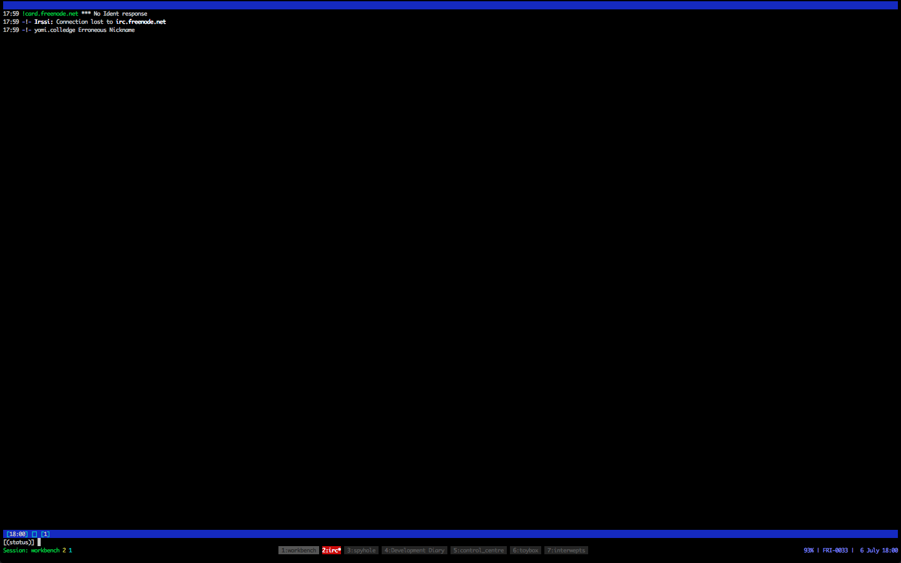

(c) 2012 Yomi Colledge
All rights reseved
No part of this publication may be reproduced, stored in a retrieval system, or transmitted, in any form, or by any means, electronic, mechanical, photocopying, recording, or otherwise, without the prior consent of the publisher.
The goal of this diary is to track the journey of improving my unix-fu and work flow.
This will be an on going process and will help me keep track of the things I have learnt and as well as how I have improved my console fu over the course of time.
There is no end to this diary, there is no real end to this diary so the size of it may well become quite substantial. I’m not sure what I’ll do in that regard and will shelve that decision for when I have gone over 90 days or so.
This diary, although written in that way, will not actually be a daily account of what I have done but based on the collective days I have spent focusing on tweaking my workflow.
The notes in the appendix will gradually be rewritten as entries or moved into the specific entry when neccessary. So over time the entries may well be tweak for readability and clarity sake. I’ll start off with a very basic workbench and build it up to the point where it it optimal for my personal use and configurable enough for others to do the same too.
I’ve come to love my current setup (tmux, oh-my-zsh, Vim, RVM and bundle). Setting up my environment may well get more complex so I’ll setup a script that will check whether these tools are available and install them if they are not.
Vim and oh-my-zsh are easy, I already have separate repositories for these. I’m going to be opinionated for the moment an focus on installing the other tools via brew and apt. I’ll check the OS and use the correct install recipe accordingly.
The idea here is to document the changes I make to my dotfiles on a daily basis to help me tweak my productivity whilst working in the terminal.
Enhancing my workflow
This will be a delve into move the my internet related information back into the console. I find it cumbersome to keep tabbing back and forth and trying to keep a mental note of how many times I need to tab to get where I want. In the terminal this can be manage a lot easier and at least allow me to set things up more like how I prefer things to be.
Day 1
So this is the first day of an on going process devised by myself to help improve and tweak my existing work flow.
For years I’ve been used to living in the console and staying away from GUI type tools to do my day to day work
So the idea is to move back to my console and improve my work flow by tweaking and getting to know my console tools better.
In this blog I’ll start with something simple, as the days progress I create a blog describing what I’ve learnt today and how it improves my day to day work flow.
Today is an easy day, I’ll start with setting up irssi, a command line interface for IRC.
What I want here is my old setup tweaked to make it easy to change channels and see is in a room.
Setting up irssi
I’m using a Mac and use brew. So it is as easy as running brew install irssi.
Job done!
Configuring
I like to see all the most important information right in front of me, so my ideal IRC client looks something like this:

Unconfigured, irssi looks like this:

Which kinda sucks!, where’s a list of who is online?
First things first, is a good place to start.
I’ll use some tips from there to get myself started.
twirssi - twitter for irc nicklist - displays a list of users
Defaults
Now it’s time to tweak our settings so that we can navigate freely and don’t have to decypher what is being said per room. I’m used to having a window per channel and being alerted when someone makes a comment. For this I’d like to create a window every time I join a new channel and remove the window once I have left one. To do this we’ll need aliases.
/SET autocreate_windows ON`
/SERVER ADD -auto -network freenode irc.freenode.net
/save
/exitThis will save us from having to add the FQDN and refer to it as an alias, freenode in this case.
Now when you restart irssi you will be automatically connected to freenode :)
Listing channel users
So to get the user list we’ll need nicklist with some tweaks.
The older versions of nicklist require us to use screen/tmux and do some hackery, I’m not a fan, thankfully I stumbled across this nicklist.pl. This isn’t ideal, we have the user list at the top but it’s much better than hoping that the screens open and things fire off at the right time.
That a soon after finding the sweet spot, the original version of the script decided to kill the cat command you had to run to get the user list, not my idea of fun.
This will do for the moment but as part of my weekend of hacking I hope to tweak this script to get the layout I want.
We will need to create a scripts directory for scripts we want to autoload.
/WINDOW NEW
/WINDOW NAME hilight
/WINDOW MOVE up
/WINDOW SIZE 10
/WINDOW stick
/layout saveThis will create a new window called hilight which will be displayed at the top be sticking 10 lines high, which means that it will stay in position regardless of changing channel windows.
Finally we make sure that our nick is highlighted with /hilight nick
We’ll leave this for now and come back to tweaking our settings later.
Day 2
So I’ve in the previous posts I’ve setup irssi and setup twirssi so that I can keep up to date with my tweets without having to deal with a GUI.
Now I want to tweak my settings so that I can open links easily and have a few more channels setup in hidden windows.
I’d also like to setup vim-mode for irssi
Today I’ll be tweaking Irssi so that I can interact with my Instant Messager and twitter accounts.
Grabbing links
I want to a way to handle links, their everywhere and their useful, to do this I’ll use bjurl.pl to highlight links and give me the ability to open and copy them.
I used this version of
bjurl. I’ll copy it to
the usual place (~/.irssi/scripts/autorun) we can than run the script and we
have a nicely highlighted URL’s :D
To open files we’ll need to do some more configuration, as I’m on a mac, I’ll download Lynx and get it to open in a new tmux window. We’ll setup our browser as lynx as it’s a command line browser.
Adding our IM to irssi
So we’ve done quite a bit with our irc client in ways of centralising communicaions, wouldn’t it be cool if we could get our IM’s to play nicely too? Well it seems that it isn’t much of a problem.
We’ll download bitlbee and create a new window for it in our irssi client.
First, the download:
brew install bitlbeeNow we can connect to one of the bitlbee servers and get things setup.
/win new hidden
/win name bitlbee
/server im.uk.bitlbee.org 6667This should automatically join you to the "&bitlbee" channel, this is where you’ll be able to setup your account and send messages :)
Once connected you’ll need to register and set a password
/register <username>
/OPEROnce you have entered these commands you will be prompted to enter your password
All set? good, now we can start adding accounts
account add jabber <your gmail email address>
/OPERNow you can enter your IM’s password. Rince and repeat until you have added all your accounts.
Finally call account on bitlbee will connect you to all of your accounts :)
All accounts successfully connected to will be stored so the next time you connect to bitlbee all you need to do is run the following commands
/identify <username>
/OPEROnce you enter your password you can then call account on and log into all IM’s
Simples :D
Resources
Day 3
So for today, I’d like to stop using twitter and move it my console. I love Twitter but GUI’s are exceptionally slow and I’d like a lot more control over what I can see when and how it’s displayed.
Setting up twitter in my console
For this we’ll use twirssi, recommended to me by @23me, who I used to spend a lot of time chatting on IRC with in my misspent youth.
The setup
So the first step is to download and setup the script and take it from there.
We’ll need to add the Net::Twitter from CPAN:
sudo perl -MCPAN -e 'install Net::Twitter'
sudo perl -MCPAN -e 'install JSON::Any'We’ll also need to run the script and pass our username:
/win new hidden
/win name twitter
/script load twirssi.pl
/twitter_login username
/twirssi_oauth <username>@Twitter <pin>This will create a new hidden window call it twitter and load the script and finally set the username. You will then be asked to authorise the application by visiting the displayed link, once this is done, you should then be ready to use twitter via irssi :)
/layout save
/saveNow you settings are saved we can happily close irssi knowing that our setup will still persist :D
For further customisation, checkout twirssi’s user guide
Setting up vim-mode
Now, where would we be if we didn’t have a favourite text editors key settings available in irssi.
That’d be heaven right, we’ll it’s pretty damn easy to get this going and to add your own mappings, which is wicked, though it’d be even better if we could just pull in our mappings from vim itself but that’s for another day.
For now we’ll just setup vim-mode for irssi, which is easy as hell, and get it setup so that we can take advantage of some of the key bindings I’ve gotten used to.
We’ll get that from here. We’ll also grab uberprompt which vim-mode depends on for some extra vim like functionality.
Once downloaded and added to your autorun directory we’re pretty much good to go. Run the following:
/run vim_modeThen we should be good to go :)
The source file has heaps of information, much of which I’ve not had the chance to read through properly yet, on how to get started and set things up just how like. So take look at that and determine what is the best for you :)
For the lazy, like me, here’s what I’ve done so far to get started.
/statusbar window add vim_mode
/statusbar window add vim_windowsWe’ll want to save these changes
/layout save
/saveThis will help you to know when you are in Insert or Command mode.
There’s heaps of documentation on vim-mode via the source file, so delve in and start hacking. Admittedly I’d love it if it took my vim settings but hell, it’s not too much hassle to setup mapping for the most important things :)
At present these are the mappings that I’ve setup to get started with
map <C-H> <BS>
map <Leader> ,
map <Leader>p :bprev
map <Leader>n :bnextI remapped the leader key to the ' as this is what I have setup in my vim. I
also setup :bprev `and `:bnext so that I can easily move around to the next
and previous windwos within irssi.
It would be nice to create a binding for specifying a window to navigate to but I’ll leave this for another time.
I could also setup bindings for navigating between split windows by adding the
below mappings to vim_moderc
map <C-h> <C-w>h
map <C-j> <C-w>j
map <C-k> <C-w>k
map <C-l> <C-w>lWe’ll also want to add bingins for navigating. Irssi uses <ESC> # to navigate to a given window, as we have vim-mode setup <ESC> is used to change vim modes so we’ll need to remap these so that they would with the new setup.
MAPPING TO BE ADDED LATERMaking <esc> has been remapped we should be able to easily move around
windows without having to rely on our newly created <leader>p and <leader>n
keys.
Day 4
So I’ve done quite a bit to get irssi setup and working as I want it. The last things I want to do is lose my settings or messing something up, as I have done a number of times already.
Keeping my settings under version control
So the easy fix for this is to create a repository and pull the config in as dotirssi.
-
There`s not much to this really.
-
I copy the .irssi directory to dotirssi.
-
I then initialised git for version control.
-
Created a new repository on github
-
ignored files with the pattern
scripts/twirssi.* -
Commited all the files
-
pushed the changes
-
added the project to my dotfiles using braid
-
This will change some point in this process
-
Copy my twirssi auth files to
~/dotirssi/scripts
Once the above was done I was able to have my irssi settings up version control :)
Opening links irssi with lynx
Yet another day of tweaking my irssi rig, today I want to get Lynx to open in a new tmux window when I select a link. I’ll use tmux to do this as it’s what it’s good at and I’ll get bjurl to call tmux when ever I select a link for viewing.
Again the goal here is to move more of my work flow into my terminal which will allow me to deal with content when I choose.
First off we need to actually be able to easily see links and open them, we’ll use bjurl for this.
As with most plugins this is as simple as downloading the script and adding it to your irssi script directory.
If your already running irssi run /run bjurl.
As I’m using a mac, I needed to to set the browse_command settings to
open links just how I want it to.
First we need a new tmux window to start lynx in.
tmux new-window -t workbench -s interweptsWe’ll need tell bjurl to behave as we want:
/set browse_command tmux send-keys -t interwepts 'lynx $1' C-mAnd that’s pretty much it for now, we can now load links within our current session :)
It would be cool if we had a separate session strictly for browsing, that way we don’t have to clutter the current session.
This and a few other things will be the next step for improving this work flow but lets take small steps and see where this path leads up :)
TODO
It would be cool if we could name our window accordingly and not have to deal with the many windows issue I have with chrome and many other browser at present. This only leads to a sluggish computer and "Tab overload"
I also need bjurl to be a bit smarter in identifying links, it’s hard to track links once 20 have been displayed, at present it’s quite useless.
Day 5
So we’ve got Lynx setup to work with irssi, after doing so I found out that w3m can deal with tabs and images. Admittedly I’m not particularly a fan of tabs, mainly as I tend to build up quite a collection of these and never really go back to them, but I’ll give it a whirl and see what the pros and cons of it as opposed to lynx.
Playing with w3m
As always I used brew brew install w3m to get things rolling.
So this is what w3m looks like out of the box.

Off the bat the colours are all wrong, trying to red blue text is near impossible when using a black background, so that had to be changed.
The other issue was that though I still had my vim keys I could not use
<C-B> and <C-F> to move around, which is annoying, that’ll have to be
changed too.
|
Note
|
how do i change the binding? |
I also couldn’t see URL’s at all.
I guess the first step is to work out how to customise w3m so that we can get those colours sorted and give it some vim love.
Ok, so changing the settings is quite easy to get to, simply press o
whilst having w3m open and the settings page will be displayed. We
simple need to scroll down to Colour Settings and specify the colours we desire.
Viewing links it’s just as easy as interacting with any other link so that’s cool :)
The only things that niggles me is not being able to set up leader key
The most important once for the moment are to page up and down quickly as the default mappings are quite a stretch.
Add the below to the keymap file within ~/.w3m gives me the ability to
do exactly this.
keymap F NEXT_PAGE
keymap B PREV_PAGENow that w3m is setup a for navigating a little easier, I’ll swap out lynx for w3m.
/set browse_command tmux send-keys -t interwepts 'w3m $1' C-mWe’ll run with this for the moment as see how it fairs.

Before we commit this to version control, we’ll make some tweaks to the config file to make it less specific to a Mac.
Below is a snippet from my config that I should change, when on a different box, I probably won’t have brew installed and I prefer to have all my settings controlled locally so we wont need the references to the skeleton configs.
urimethodmap ~/.w3m/urimethodmap, /usr/local/Cellar/w3m/0.5.3/etc/w3m/urimethodmap mailcap ~/.w3m/mailcap, /usr/local/Cellar/w3m/0.5.3/etc/w3m/mailcap mime_types ~/.mime.types, /usr/local/Cellar/w3m/0.5.3/etc/mime.types
It now looks like this:
urimethodmap ~/.w3m/urimethodmap
mailcap ~/.w3m/mailcap
mime_types ~/.mime.typesSo now we’re pretty much ready to play around with it for a while and take notes of things that I’d like to change.
TODO
-
How to send a link of what I’ve read to Twitter
-
How to share a link with Google+
Resources
Taming the mutt
I’d like to use mutt for dealing with my email, AppleMail is cool but it’s way too much for my liking and I’d prefer it if I could organise my emails without having to fiddle with sub folders manually.
I my old config this was done by using procmail to create/send emails to folders dependant on the source of the email.
This was pretty configurable so I’d like to get some of this back into my current setup so that I don’t get email overload :)
Setting things up
I had a better setup a while back but after rummaging around for ancient backups I decided to start from scratch.
Again, I’ll be using brew to get mutt installed brew install mutt
You’ll need to run the following commands:
mkdir -p ~/.mutt/cache/headers
mkdir ~/.mutt/cache/bodies
touch ~/.mutt/certificatesNext I needed to create a .muttrc file, to setup my GMail account. I
used this example
here to get things
started.
I had to make a few tweaks to get things just right. Firstly the order of the emails were newest at the bottom which is kind of annoying, I’d like to see my newest emails first, so this needs to be sorted.
We’ll hold out on that for the moment and customise the look of mutts, I stumbled upon this theme that works pretty well for the moment so I’ll go with that for now.
Now back to the matter at hand, how to get the sort order setup so that my newest emails are displayed first.
So I had to go into my muttrc file and make this changes
set sort_aux = 'reverse-date'And make sure I also had the following in my config too:
set sort = 'threads'Mutt is now setup, well enough to start playing around, I’ll work on integrating this into my workflow as time goes on.
The final things is to move this into it’s own repository for now, as I will be restarting my dotfiles from scratch once I have all these pieces setup.
I did what I usually do, created a git repo and moved my .muttrc file
to ~/.mutt/muttrc and then renamed the directory to dotmutt.
Once this was done I went through the motion of pushing the setting to a new repository.
I then used braid
braid add git://github.com/baphled/muttfiles.git dotmutt
ln -s dotmutt .mutt
ln -s .mutt/muttrc .muttrcThen everything was setup as it where :)
TODO
-
Improve the way I’m handling my email credentials
-
Setup email alerts via the terminal
-
Create screengrabs as I did with irssi
Day 6
I’ve been writing quite a bit recently and have wanted to play around with git-scribe for authoring my diary and possibly writing projects in the future.
Today I’ll be setting up git-scribe and updating my diary so that I can generate content in various formats. Initially I’ll only publish this content as HTML but then move on to PDF and epub later once I’ve ironed out the kinks.
Setting up git-scribe
It’s not directly related but I love to write and I’d like my setup to allow me to easily write new material and publish them in various formats.
I’ve been watching git-scribe for some time and thought this would be a perfect time to bring it into my current workflow.
I’ll setup git-scribe as it allows me to write my entries in AsciiDoc format and compile it into a number of formats (html, pdf, mobi, etc).
As this is the case we’ll have a play with this setup and possibly use it for publishing other material.
There’s not much to this really the project has great documentation
Once installed I started initialised the new book.
git scribe initOnce this was done I had the basic setup needed to move my diary. git-scribe uses AsciiDoc to format content so I needed to convert the old markdown. That wasn’t so much trouble as there isn’t much different in the markup. I created a couple of vim macros and went through the pages and updated them accordingly. The main changes needed were related to the titles of each entry.
Once the files where moved into the book directory and the format of the
content was setup it was easy to generate the site with one command git scribe
gen site. In the output directory was the generated diary nicely formatted
and indexed.
TODO
-
It would be nice to automatically resize images so that they are not too large or too small.
-
create a script that generates my diary into HTML
-
the output will be another repository
Resources
Day 7
So I have a decent setup for browsing, communicating and writing.
Now I want to be able to fire off all of my tools in separate windows so that I can easily manage them and keep my work flow contained.
Setting up tmux
I already have tmux installed at present, though there will be a point when I start my dotfiles anew and will properly document the process.
For now I want to focus on how to automatically spawn a tmux session along with the default windows I use on a day to day basic.
I’m using tmux along with tmuxinator to help manage my setting.
Installing tmux is done simply by call brew install tmux once this has
been installed we are ready to play with tmux. As I mentioned I’m using
tmuxinator which is a ruby gem so we’ll add that to our Gemfile:
gem 'tmuxinator'Running bundle install will install tmuxinator and then we are good to go.
Tmuxinator stores it’s configuration settings in the ~/.tmuxinator directory
but we can create a new setup my running mux create workbench. I’ve already
done this so I just ran mux open workbench to open the file in vim.
The layout
What I want here is a single session that setups up my perfect setup, allowing me to make the most of my terminal.
For this I’d like the following windows:
-
Workbench
I’m often scawling notes of some kind so having a window to allow me to work with vim. So I want a window (Workbench) where I can interact with files via vim and have access to the console. This is where most of my actually work is done.
-
IRC
I still want to be able to communicate with others and get topical information so I will want to use the irssi setup I’ve setup to allow me to keep my communications centralised.
-
Spyhole
Tmux allows you to capture terminal output, I’d like to have a window that tails the log file and display any captured content. With tmux’s copy and paste functionality will can easily pull out captured content and use it in other places.
-
Email
I still need my emails so having a window for that that I can quickly jump to when I feel to would be idea, Mutt is pretty lightweight and I’m sure I can set it up so automatically check for new emails, though procmail.
-
Control Centre
I like to know if there are any changes that to my dotfiles master branch,
ideally this should be a panel in a window, for now this is be another stand
alone window that periodically calls git wtf to check for changes.
-
Toybox
I like o have a ruby repl that I can play around with and test out ideas. I’ve been playing around with pry a bit recently so I’d like to have a window open that allows me to test out ideas before I hack away at a solution.
-
Interwepts
As we have irssi setup to open a browser, we setup this window so that irssi can open w3m for us.
The setup
Now I know what I want in regards of session setup, lets open up my workbench config file and make this set up, all we need to do is update of config and fire up the new session.
My config
project_name: workbench
project_root: ~/
rvm: 1.9.2-head@workbench
pre: cd ~/ && bundle
tabs:
- Workbench:
layout: b147,208x73,0,0[208x62,0,0,208x10,0,63{104x10,0,63,103x10,105,63}]
panes:
- vim
- #empty, will just run plain zsh
- Interwepts: w3m http://google.com
- IRC: irssi
- Email: mutt
- Spyhole: tail -f ~/workbench.log
- "Dotfile Diaries": vi ~/Documents/Diary
- 'Control centre': git wft
- Toybox: pryNow with this setup, we can simple run mux workbench and tmuxinator will
handle the rest, creating and setting up each of my desired windows along with their separate tasks :)
I won’t go into detail about my mappings and my config, as it can be
here, and I’d like
to leave a broader explaination when I starting tinkering with ~/tmux.conf.
TODO
-
Make sure that my workbench gemset is created
-
Open w3m with a better default
Refine my workflow
I already have my dotfiles under version control but I would like to clean these up and find a way to make them a little bit more maintainable. Primarily I want to move away from using braid and my forked version of my dotfiles.
This will lead me towards improving my vim settings and skills.
For this I will setup my dotfiles from scratch and show the pros and cons of my setup and how I like to have things laid out.
Day 8
Today I’d like to start sketching out how my dotfiles should be setup and maintained. I’ll also come up with some ideas as to what my dotfiles will include and how to maintain the core dependencies of them.
As some of the setup may change from box to box I shouldn’t have to throw everything into once basket, my dotfiles, I’d like to build some scripts that handle the dependencies of the setup and makes it easy for me to continue to tweak it whilst allowing it to be setup on any box with ease.
Dotfile blueprints
So this is where the plan starts to come together.
My dotfiles should be a collection of settings and utilities that help me with my day to day work. As time has gone on I’ve learnt what I like and what I don’t and have always like the idea of having one group setting that can go anywhere. Back in the day my setup was stored on my personal CVS repository, these days its github.
NOTE: This link will need to be changed when we start the new version or clean up the current.
I already have my dotfiles here.
So there are a few thins I’ll need my dotfiles to have, as follows:
-
I must be able to push changes to any of my dotfiles without adding them to my actual dotfiles, at present I’m having to do a lot of copy and pasting
-
It must be easy to update dependancies
-
Must be under version control
-
Should have a collection of custom scripts for things I do a lot of
-
This is start off by being a bunch of git scripts
-
Alert me if my dotfiles or their dependancies are out of date
-
I’ll start on doing this just for my other dotfiles (dotmutt, dotirssi, etc)
-
Create a script to install my dependancies
-
This will start of by focussing on installing things via brew
-
Should automatically check for new gems that my dotfiles rely on
-
Must include the applications that my dotfiles rely on
The basics
Let’s start from the top, I want the following:
-
Vim
-
Tmux
-
ZSH
Regardless of what I’m aiming to do I’ll need all of these to make my workflow as productive as possible.
I’ll need to branch my current repository so that I can start a fresh, once
this is done, the next thing to do will be to add the dependancies. I may look
into using puppet or chef for this but if that is the case then I will want to
make sure that my dotfiles knows how to do a bundle install.
So I guess the first thing will be to install rvm and get that setup so I can setup ruby.
I should also document this process so that I can turn it into a script which makes sure that I have the correct version of ruby and have run bundle.
So for zsh I’ll want to use oh-my-zsh . I’ll use my own forked version, which includes my custom theme, and will add it to my newly created dotfiles.
The main issue at the moment is that if I have made changes to my dotfiles or any of their sub repositories I’d like the commit to got to the right repository and not just be added to my dotfiles.
I’m not sure how easy it is to achieve this but this would be the ideal situation for how I work. It very rare that I know the correct config or commands or changes for the at matter from the get go and have to spend a little time tinkering on my local setup before I can commit to anything. So having to keep track of these changes and copy them to the specific repository is a pain and error prone.
Day 9
Today I’ll be looking at what I have at the moment, in terms of my dotfiles setup, and what I need to deal to improve it and make it easier to maintain.
Starting a new
So the first thing I’ll need to do is stripped down my repository so that I can start a new.
WARNING: This can be somewhat hazardious if you rely on having all of your downloads in your home directory as the following command will remove everything from your repository and working directory
This will be used to stripped down my dotvim repository and help me start from scratch whilst keeping my master branch intacted.
git symbolic-ref HEAD refs/heads/stripped
rm .git/index
git clean -fdxThis took some time and basically removed everything in my home directory, which I didn’t really think about prior to running the command. So going back was not really an option.
Once the command had finished all my personal setting were removed and I recieved a bunch of errors relating to RVM not being found. This was because my zsh settings rely on RVM for prompt information.
So the first thing I want to do is change into bash and get RVM back up and running.
Installing RVM
So the first thing i’ll need is RVM. This will be needed by my zsh prompt and for the dependancies for my workflow.
I like to have the latest version of Ruby so I can keep up with what’s new in the latest releases.
curl -L https://get.rvm.io | bash -s stable --rubyThis will install the latest version of RVM and Ruby, so I am well on my way to getting Ruby setup on my system.
Once rvm and the latest version of Ruby installed I wanted to change my setup so that the gems installed as part of my dotfiles are now installed in global, so that they are available everywhere.
To do this I needed to make sure I was in the global gemset which was done by using the following command.
rvm gemset use globalNow that I am using the correct gemset, I need to make sure that I run bundle to make sure that everything is in place.
bundleOnce this is complete I have all my gems and rvm setup and ready to go.
Resources
Removing Braid
Braid can be a pain and I’d rather have more control over my external repositories to achieve this I will look into using git submodules. But first I will need to remove the external repositories and get rid of braid.
I had the following gems installed before I started this process:
braid
git-scribe
tmuxinator
pryI no longer want to use braid, so I will firstly remove all the external repositories
I also have the following external repositories:
oh-my-zsh
dotirssi
muttfiles
dotvim|
Warning
|
Removing these files cause a lot of things to break. |
To make sure that I don’t break anything I can’t fix imediately, and to keep my previous setup, I’ll need to create a new branch
gco -b remove_braid|
Note
|
The above command uses an aliases via oh-my-zsh |
We’ll start off by removing these via braid as follows:
braid remove oh-my-zsh
braid remove dotirssi
braid remove dotmutt
braid remove dotvimSo the most important repository for me is oh-my-zsh it’s pretty much invaluable and it would be an idea to get this setup as soon as possible.
git submodule add git@github.com:baphled/oh-my-zsh.git oh-my-zsh
git submodule init
git submodule updateNow I have my zsh setup as a submodule I can make changes to the repository and push them directory to the right repository :)
The next thing is to do the same for my other repositories
git submodule add git@github.com:baphled/dotvim.git dotvim
git submodule add git@github.com:baphled/muttfiles.git dotmutt
git submodule add git@github.com:baphled/dotirssi.git dotirssiNow any changes made to my external repositories intermally or externally can now be easily tracked :)
The last step in the journey is to remove braid from my Gemfile as it is no
longer needed directly by the repository. That is as easy as removing the line
gem "braid" and running bundle again.
Now we have a cleaner repository and less worry in regards to how my other repositories are updated and managed.
So now that I am using git’s submodules to manage my external repositories I can now make local changes and update the correct repository without polutting my dotfiles with changes that are not directly related to them.
Day 10
In my old muttrc file I had procmail getting my mails and storing them in separate folders so that I can work out what was what and how important it was. I’ve long since had this setup and I’ve pretty much forgotten how it was all setup.
Today is the day I start getting this setup back, this only be the start I want to be able to view all my email account via mutt and drop the UI all together. I look into email filtering and gradually improve my mutt as I go along.
Improving mutt
So I have my GMail account setup but that’s not enough. I want to include all my personal email accounts and maintain them.
This will include processing my mail and sending/creating subdirectories based on a single emails content.
Ingredients
-
procmail
-
mutt
-
fetchmail
-
msmtp
Procmail and fetchmail are installed on Macs by default (is is not true from Mountain Lion) so that saves me a step, so I guess the next things is to create some mail recipes.
So I’ll have to run the following to get the ball rolling:
brew install msmtpI then had to add the following to my .zshrc
MAIL=/home/baphled/mail/inbox && export MAILThen in my home directory I ran:
touch .fetchmailrc
chmod 700 .fetchmailrcI then needed to poll my main email account poll mail.my-email-account.net with proto POP3 user EMAILADDRESS keep mda /usr/bin/procmail -d %T
I put my credentials in my .netrc file as follows:
machine mail.my-email-accoun.net
login my-username
password my-password|
Note
|
Make sure that .netrc is added to .gitignore |
When setting up on Mountain Lion I had to make sure that I had setup my email details properply and to do this I had to do the following:
fetchmailI needed to install fetchmail via brew, this is not part of the default setup so I had to add a new repository.
brew install https://gist.github.com/raw/4579545/97d8446299dd21d5ff0f053c40b949ab4425706c/fetchmail.rbOnce everything was setup properly fetchmail did it’s things and retrieved my email. This is the bare minimum I need to make sure that I have procmail working so that I can store my email in the right directories.
I need to then create the mail directory ~/Mail which is where all my mail
will end up.
Recipes
So now I need to sort my emails into separate files so that I can deal with them easily.
For this I’ll be using procmail and its' recipes to determine where emails should.
|
Note
|
Add my basic recipes here |
I’d also like to make fetchmail get my latest mail via mutt and not via a background process, this is quite easy with the follwoing macro:
macro generic G \
<shell-escape>'fetchmail'<enter> \
'Run fetchmail'|
Note
|
Need to document how to setup mail directories |
Now I need to be able to move around my filtered directories easily. To do this I can add a couple of macros to allow me to do just this.
Managing multiple directories
|
Note
|
Add macros for selecting mail directories |
I’d also like to have a split screen so that I can see both the email I’m reading as well as the list of emails in mail directory I am currently in.
TODO
-
Create generic recipes for project messages and the like
-
Setup vim like bindings
-
Move all email related config files into one repository
-
Setup multiple accounts
-
Each account should have its own default directory
Day 11
So my email is being retrieve, manually, so now I’d like to focus on getting this setup to be retrieved automatically and work out some procmail recipes so that I my email is nicely organised for me.
Organising my email
So like most I get quite a lot of email, varying in importance and relevance dependant on time. I’d like to get my old setup back in place with a few tweaks. Things are pretty much configured so that my email will be sent to the correct file but I need to improve on these recipes so that I don’t have to keep going back and forth over a long period of time constantly tweaking it.
There are a few groups I know I’ll need and as time goes by I will have to add the odd new recipe but for now I’ll focus on my personal email and how to get that under some order.
|
Note
|
Link to my first procmailrc |
As with others I get quite a lot from various services, these can be
filtered more as time goes on but for now I’d like a dumping ground
social which will store all the unmatched emails that may slip through
procmails net.
I also like to not see email regarding jobs/roles I’m not interested in.
Emails that have a given type of subject or come from know offenders
(crappy recruitment consultants) should be sent to /dev/null so that I
don’t have to bother with them. This may need some tweaking but I think
testing my recipes by dry running it against my main email address
should help to get this refined relatively quickly
I also need a new directory to be created for any discussion groups I have joined. The idea here is that these will be caught by procmail and the name of the file will be created based on this. This way I don’t have to meddle with procmailrc too much and keeps things nice a clean.
Mailing lists
First things was to create a dummy email.
From info@meetup.com Wed Jul 18 00:00:20 2012
From: John Doe <info@meetup.com>
Sender: foobar-announce@meetup.com
To: FooBar-announce@meetup.com
Subject: [FooBar] FB Meetup group closing down
Mailing-List: list FreelanceFriday-list@meetup.com; contact postmaster@meetup.com
List-Id: <FooBar-list.meetup.com>
List-Unsubscribe: <mailto: support@meetup.com>BODY OF MESSAGE SEPARATED BY EMPTY LINE
txt txt txt txt txt txt txt txt txt txt|
Note
|
Stolen from: http://bethesignal.org/dotfiles/procmailrc.html |
To do a dry run on my recipes I used the following command:
procmail VERBOSE=on DEFAULT=/dev/null \
LOGFILE=~/test.log \
~/.procmailrc < ~/emailtest.txtSo the first thing I need to do is setup my social related email file.
:0
* ^((List-Id|X-(Mailing-)?List):(.*[<]\/[^>]*))
{
LISTID=$MATCH
:0:
* LISTID ?? ^\/[^@\.]*
$MATCH
}From time to time I find myself on a MAJADOMO mail server so I’ll add this in to preempt these occasions.
# MAJORDOMO - Automagically handle Majordomo lists
:0
* ^Sender: owner-[^@]+@[^@\+]+
* ^Sender: owner-\/[^@\+]+
{
:0:
$MATCH
}After doing a dry run the following directory was automatically added to my Mail directory.
l Mail
total 3187
-rw------- 1 baphled staff 3187 19 Jul 20:24 FooBar-listNow the problem here is that mutt does not recognise the directory and I will have to still manually add each one as I notice them into my mutt file.
There is a way around this I could make mutt smarter and work out which directories are inboxes and which are not.
|
Note
|
Wrote a script that can easily list the inboxes. Need to automate |
Filtering LinkedIn Discussion groups
Now I’m on a few LinkedIn mailing lists and they don’t adear to the above rules so I will need to create a generic rule that sends all LinkedIn originating emails to the appropriate discussion group.
Getting the regexp just right wasn’t easy but I finally manage to get it to work with a little help from the shell.
I took the same route as I did earlier, copied a same email to the emailtest.txt file, after a while I came up with the following.
:0: # Change this so that it sorts by the digest group$
* ^(From):(\/.*).*\<group-digests@linkedin.com\>$
`echo $MATCH | awk '{$NF=`}1' | sed 's/ //g'`$''`The most cryptic is the following line:
`echo $MATCH | awk '{$NF=`}1' | sed 's/ //g'`$''`Basically I echo the matched address out to the shell which then returns everything but the last column, in this case it’s the email address. It then removes all spaces and we have our directory.
Filter PR crap
I’m still getting quite a bit of email dumped into my main inbox. I want to fix this so that I don’t have to waid through heaps of PR related stuff I’m not really interested in.
This will be my dumping ground for emails I’m not likely to really read.
|
Note
|
Improve the readability of the next few paragraphs. |
Anything that has offers in the email address are the first to go. GoDady use this account a bit so they’ll be the first ones to go. Then next work would be campaign this wreaks of PR type stuff I’m not really interested in. Another keyword would be discount if you you have this in your email address I more than like never see your email ;)
It seems that people actually use a marketing account so again this will be put in the same inbox as others above.
Below is a list of nasty PR words I’d like to throw into this inbox:
-
offers
-
campaign
-
discount
-
marketing
-
sale
-
sell
3rd party services
There are a few services I use to maintain my sites and code. I want to be able a basic recipe that stores all the account summary related emails in one place so that they aren’t stored in my inbox.
-
newrelic
-
godaddy
-
heroku
-
code school
-
peepcode
-
railscast
-
destroy all software
-
pragprog
Inept Recruitment filter
I really don’t like having my email account filled with numerous emails from recruitment agents regarding roles I will never consider. This list will start to become overwheling if I just make a list of agencies that are reknowned for not doing a good job. So I will start off by composing a list of keywords that will help me solve this problem.
So the list goes as follows:
-
PHP
-
Drup
-
Perl
-
VB
-
.Net
-
Javascript
Social
This will be where all my social gumph goes, mainly things like facebook and random LinkedIn stuff etc.
-
facebook in general
-
LinkedIn stuff not caught earlier
For the curious here is a list of my basic recipes that I ended ip settling with for the time being.
TODO
-
Filter emails via my address book
-
lower case To and From results
-
Improve my 3rd party filter
-
HTML based emails can be a pain in mutt so I’d be cool if I can view these without having to sift throught HTML.
Resources
Rebasing my master branch
So it’s been a while since I’ve rebased my changes to the master branch. I’m relatively happy with the removal of braid so I think it’s time to merge my latest changes into my master branch.
So the first issue I had was that I had problems checking out the master branch because of the changes to the external repositiories. So I had to issue the following command:
git co -f masterThis allow me to checkout the master branch and disregard the previous warnings.
|
Note
|
Doing this can be a time soak. |
I could them do the following to merge my braidless branch into master.
gup braidlessAfter this gladly there were no merge conflicts but all of my external repositiories were deleted.
I basically had to go into each of the external repositiories and checkout all off the deleted files. This took some time but once it was comeplete the master branch was happily merged.
Notes
-
Master brach before change GH#0e15429
-
Master branch after change GH#e92354e
Day 12
There are a couple of small things that need to be adressed before I introduce my other email accounts. As it stands I have filtered mail but there is no easy way of getting to my filtered inbox without some hassle. I need to setup a way to let mutt automatically know which mailboxes I have without having to constantly update my muttrc file.
Update mailbox list
I had problems trying to get mutt to list all my mail boxes internally due to my bash noobishness but I did find a way to do it semi-automatically. I’d like to improve on this process so that I can make it a lot easier to be able to keep my inbox list up to date whilst keeping mutt open.
The idea
So it was pretty easy to create a script that lists all the files in my mail directory and returns them as a list of arguments. I then loop over each mailbox and echo out the format needed for mutt to recognise it as a mailbox.
Once I have the desired string I then send it to a mutt config file in a format mutt can recognise.
mailboxes =inbox =foodie =gamingBringing it to life
This did actually take some time to work out the simplist way of actually getting a list of mailboxes without having to update my muttrc everytime one was discovered.
I knew the best way to do this via the command line but I wasn’t completely sure how. I first start off by getting a list of inboxes and piping the results to xargs so that I could loop over each of them but this caused a broken pipe error when ran as a subcommand in my muttrc. After a while of hacking a few concepts I remember how useful sed is in these situations. I ended up with the below code snippet which actually did what I wanted for the time being.
mailboxes `ls -r ~/Mail | xargs | sed 's/ / =/g' | sed 's/inbox/=inbox/'`[NOTE]: I’m aware that this could be improved, ideally I want to prepend a = to the first word instead of relying on the fact the inbox will always be the first work back.
The above comand basically lists all the files in the ~/Mail directory
and adds them to a list and finally appends = to each inbox. This way
I don’t have to worry about new inboxes being created and having to keep
track of them. I sinply have to create a new procmail recipe and let
mutt work out where the new inboxes are stored :)
Now that I have a semi decent mutt setup I’d like to setup multiple SMTP servers. It’d be cool if mutt could be configured so that I could send a reply and the correct SMTP server is used, along with the right response header.
Adding multiple SMTP accounts
So I have my personal email accounts setup, so now I can read all my emails and filter them pretty easily. The only thing missing here is being able to respond to emails with the correct email address.
So the problem at the moment is that all emails I send are set to my username and machines hostname (my.username@my.machines.name.com), which is obviously what I want, I need to update mutt so that it can tell which email address to use as the sender.
This requires quite a bit of setup so I’ll hold of on doing the actual setup and work out what I actually need to do to all me to choose which account to send emails.
The first thing I’ll need to do is make sure that the From field in my email responses are not that of the local machine. This should actually be the email address that the email was sent to.
I’m not quite sure how to do this yet so I’ll put a fork in it for the moment so that I can focus on getting the rest of my setup functional.
Day 13
I’d like to organise my RSS feeds into mutt or an alternative news reader so that I can easily keep up with current tech. Today I’ll dedicate some time into getting this setup.
Getting a feed reader
So the next step along this journey is to setup a news reader. I’ve looked at a few that I used to use in the past.
I stumbled on newsbeuter which is a cli with a mutt feel. Ideal for me as I’m an avid mutt user.
Unfortunately brew can’t find newsbeuter by it’s self so I needed to tell it where it is and then install it on my system.
brew tap posativ/homebrew-newsbeuterThis installs the brew formula needed to install newsbeuter. Once this was complete all I had to do is run:
brew install newsbeuterAgain I had to wait, this time for newsbeuter to install, and then I was ready to play with newsbeuter.
I use GoogleReader for all my RSS feeds so I needed the following in my
~/.newsbeuter/config file.
urls-source "googlereader"
googlereader-login "your-googlereader-account"I also wanted to be able to share and star articles so I also added the following mappings
googlereader-flag-share "a"
googlereader-flag-star "b"|
Note
|
Need a way to not have to disclose my google user id. |
Once I started newsbeuter I had an empty list of feeds that I have subscribed
to in the past. The only thing left for me to do was to press R and wait for
all of my feeds to update :)
Navigating through feeds is similar to vi but I’d like to actually have the basic bindings in place so that I don’t have to keep changing context.
It would also be cool if I could tweak the layout so that it looked more like my mutt setup. I’m not sure on how easy this but I’ll look into this and see how easy it is to achieve.
It’s important to be able to view links easily, I’ll continue to use w3m as my browser of choice as it is already configured and working pretty well. newsbeuter also has podcast support :) so I can keep up to date with my podcasts without having to rely on itunes.
In my ~/.newsbeuter/config file I added the following:
browser w3mNow that is setup I can easily open links by proving the number associated to the link of interest.
TODO
-
Find out how to delete a feed
-
How to add odps files along with GoogleReader
-
Only display unread blogs articles
Resources
Adding a newsreader my workbench
So the final step in add a newsreader to my workbench is actually attaching a window to my workbench so that I can easily view my news feed at my own leisure.
The first thing to do is add a new window to my workbench config
"Newsfeed": newsbeuter|
Note
|
Add link to my updated workbench config. |
I then kill my session and restart it again and I now have a separate session to view my newsfeed.
I’ve added this just after my IRC Window so that I have all my communicated centric windows all together.
TODO
-
How do you add and remove feeds
-
How can I download podcasts
-
How to customise key bindings to be more like vim
-
Tweet articles I’ve read
-
May be able to use ifft for this
-
Talk more about my config
Resources
Day 14
Braid is causing me hassle and as part of cleaning up my dotvim files I want to replace braid with git submodule. This will be part of the cleanup needed for dotvim files in preparation of me improving my vim skills.
Removing VIMs braid
So I’ve been using braid to manage my vim plugins but I’d prefer if I used git directly as I am with my dotfiles. The first thing to do is keep a list of all of the plugins that I have, I’ll need this so that I can keep the plugins I am currently using.
I’ll be using the following command to add each plugin as a git module:
git submodule add git://github.com/username/project.git plugin/pathAll but one of the plugins live in the bundle direction the only exception is
vim-pathogen with lives in the parent directory of my dotvim repository. So the
command I need should output the following formats
git://github.com/mileszs/ack.vim.git ack.vim.git
git://github.com/spf13/asciidoc-vim.git asciidoc-vim.git
git://github.com/ayang/AutoComplPop.git AutoComplPop.git
git://github.com/kien/ctrlp.vim.git ctrlp.vim.git
git://github.com/tpope/vim-cucumber.git vim-cucumber.git
git://github.com/Raimondi/delimitMate.git delimitMate.git
git://github.com/tpope/vim-endwise.git vim-endwise.git
git://github.com/tpope/vim-fugitive.git vim-fugitive.git
git://github.com/claco/jasmine.vim.git jasmine.vim.git
git://github.com/leshill/vim-json.git vim-json.git
git://github.com/scrooloose/nerdcommenter.git nerdcommenter.git
git://github.com/tpope/vim-pastie.git vim-pastie.git
git://github.com/tpope/vim-rails.git vim-rails.git
git://github.com/msanders/snipmate.vim.git snipmate.vim.git
git://github.com/tpope/vim-surround.git vim-surround.git
git://github.com/scrooloose/syntastic.git syntastic.git
git://github.com/tpope/vim-unimpaired.git vim-unimpaired.git
git://github.com/smerrill/vagrant-vim.git vagrant-vim.git
git://github.com/tpope/vim-abolish vim-abolish
git://github.com/tpope/vim-bundler.git vim-bundler.git
git://github.com/kchmck/vim-coffee-script.git vim-coffee-script.git
git://github.com/rson/vim-conque.git vim-conque.git
git://github.com/mattn/gist-vim.git gist-vim.git
git://github.com/austintaylor/vim-indentobject vim-indentobject
git://github.com/Lokaltog/vim-powerline.git vim-powerline.git
git://github.com/rodjek/vim-puppet.git vim-puppet.git
git://github.com/tpope/vim-ragtag vim-ragtag
git://github.com/tpope/vim-rake vim-rake
git://github.com/bronson/vim-ruby-block-conv.git vim-ruby-block-conv.git
git://github.com/ecomba/vim-ruby-refactoring.git vim-ruby-refactoring.git
git://github.com/hallison/vim-ruby-sinatra vim-ruby-sinatra
git://github.com/csexton/rvm.vim.git rvm.vim.git
git://github.com/kaichen/vim-snipmate-ruby-snippets.git vim-snipmate-ruby-snippets.git
git://github.com/godlygeek/tabular.git tabular.git
git://github.com/nelstrom/vim-textobj-rubyblock vim-textobj-rubyblock
git://github.com/kana/vim-textobj-user vim-textobj-user
git://github.com/jimenezrick/vimerl.git vimerl.git
git://github.com/vitaly/vim-vividchalk.git vim-vividchalk.git
git://github.com/mattn/webapi-vim.git webapi-vim.git
git://github.com/tpope/vim-pathogen.git vim-pathogen.gitThis is enough to work with for the moment, I can easily do set this up so that I don’t have to manually add each plugin using git submodule. I need the following format to successfully add each plugin using git.
git submodule add git://github.com/username/project.git plugin/pathRunning the following command gives me the output I want:
cat .braids | grep 'url' | sed 's/url://' | awk -F/ '{print $0, $5}' > ~/vim-plugins.txtNow that I have a list of repos that I will want to add as submodules. With a little vim trickery I can whip and basic bash script to automatically add my plugins.
vi ~/vim-plugins.txtI normal mode I type the following: V38j :'<,'>normal f i bundle/ :%s/bundle\ //bundle\//g
This will prefix bundle/ to all lines, but the last, to the 2 column. vim-pathogen is saved to the parent directory.
:'<,'>normal I git submodule addNow I have the necessary list and location for all my plugins. I’d like to reverse the list to make sure that pathogen gets install first.
awk '{x[NR] = $0} END { while ( NR > 0 ) print x[NR--] }' vim-plugins.txt > plugins.txt && vim-plugins.txtThis will use awk to reverse my plugin list as I wanted. Now it’s time to remove all the plugins via braid. Then I can then add my plugins again using git’s submodules.
cat .braids | grep ': $' | sed 's/://' > ~/plugins.txt | for plugin in `xargs`; do; rm -rf $plugin; doneThe above command creates the output needed to remove all of my plugins that were installed via braid.
Finally I just have to execute the script I created that will add all my
plugins using git submodule.
Once this was done all I had to do is comit my changes and pull them in and I have no more need for braid anymore.
Reinstalling my dotvim plugins
Now I have a list of the plugins I had from when I was using braid. Now I’ll use this list to reinstall my plugins and get my dotfiles up to date.
Here’s a list of all my plugins that I currently have installed.
ack.vim
asciidoc-vim
autocomplpop
ctrlp
cucumber
delimitMate
endwise
fugitive
jasmine
json
nerdcommenter
pastie
rails
snipmate
surround
syntastic
unimpaired
vagrant
vim-abolish
vim-bundler
vim-coffee-script
vim-conque
vim-gist
vim-indentobject
vim-powerline
vim-puppet
vim-ragtag
vim-rake
vim-ruby-block-conv
vim-ruby-refactoring
vim-ruby-sinatra
vim-rvm
vim-snipmate-ruby-snippets
vim-tabular
vim-textobj-rubyblock
vim-textobj-user
vimerl
vividchalk
webapi-vim
vim-pathogenLater on I will focus on these plugins and learn and use them better. Ideally I should have a clean slate to improve my vi foo. For the moment though I will just add them using git submodule and deal with stripping them down later.
Day 15
So I now have a news reader so the only thing left to setup are my podcasts. I’ve been using itunes of late and would like to move away from that and see what newsbeuter has to offer in the way of helping me to keep up with podcasts.
Managing my podcasts
Now is the time that I move my podcasts from iTunes back to the console, where they belong. I’ve already installed newsbeuter so I can use that to track the podcasts I listen to and handling queuing and downloading them.
This is pretty simple really, first off I needed to add a podcasts to my feed
list. I then checkout any new items via newsbeuter which picked up the podcast
and listed it as expected. The next step is to queue up the latest podcast and
listen to it via podbeuter. Pressing e enqueues the podcast which will add
the podcast to the queue for downloading. Opening podbeuter showed me the
podcast in the queue allowing me to press a to start the download.
Here’s the changes I needed to get podbeuter to download and listen to my podcasts.
download-path ~/Downloads
max-downloads 2
player afplayPressing p inside podbeuter actually plays the selected audio file and then
we’re away. Podcast management from the command line :).
Adding podbeuter to my workflow
As this has been described in previous entries this part is straight forward
and only requires a reference to my ~/tmuxinator/workbench.yml file. I simply
add a new Podcast window next to my Newsfeed window. Keeping all my
communications close together.
Splitting my workbench
My workbench is starting to get cluttered now and it is becoming increasingly clear that I have two types of workflow living in the same session. Ideally I’d like to have my commucation based workflows in a single session whilst my workbench and hacking session is in another.
this is pretty easy, the only thing I raelly need to think about is how these two sessions will be started.
Firstly I remove the communications related sessions into a new tmux configure file as follows:
project_name: comms
project_root: ~/
rvm: 1.9.2-head@global
pre: cd ~/ && bundle
tabs:
- Interwepts: w3m http://google.com
- IRC: irssi
- "Newsfeed": newsbeuter
- "Podcasts": podbeuter
- Email: mutt
- Spyhole: tail -f ~/comms.log
- "Dotfile Diaries": cd ~/Documents/Diary && vi book/book.asc
- Top: topThis leaves me with the following workbench setup:
project_name: workbench
project_root: ~/
rvm: 1.9.2-head@global
pre: cd ~/ && bundle
tabs:
- Workbench: vim
- Spyhole: tail -f ~/workbench.log
- Toybox: be pry
- 'Control centre': git wtfI now have two separate sessions to deal with my main two workflows further helping me to keep my workflows focussed and without switching context too much. Now I need to make sure that I can load these two sessions easily whilst keeping their session location in guessable positions.
All I need to do is add the following to my .zlogin file:
mux comms && mux workbenchThis will automatically start both sessions as soon as I start a zsh session.
This could be moved to .profile if needed but for the moment I won’t worry
too much about that as I tend to use zsh more than anything else.
Once this is done I make sure that I only start iTerm with a default session
and let .zlogin do the rest of the work.
Learn my tools
This time I’m going to focus on the tools I use the most and tweak those over a period of time.
I’ll go into depth on the vim plugins I use and why I use them and document some of the pain I’ve experienced and what I did to alleviate these hassles. As I use Vim quite a bit this will be my first port of call. I will then move over to tmux and zsh.
Day 16
The first thing I’m going to need to do is delete my old repository and create a new one with the same name. This will
bork my dotfile repository submodule but I can easily fix that by either updating the reference manually or removing
and reinstall the plugin via the command line.
Before I do this I want to move some of my settings around so that they can be easily added or left out if I desire. My aim here is to make it easier to choose the vim setup I prefer.
My initial setup will be a bare bones version of Vim with little to none plugins added. As I gain more proficiency I will gradually add plugins to my workflow to help enhance the keystokes I have already learnt. The first of these will focus on text objects and then I will focus on movements and making project wide changes.
I will stick with plugins that enhance the mime types available to me and help with some basic formatting. Once I have this under my belt I will start to delve into VIML and creating my own plugins and tweaks.
Whilst doing all this I will be picking up a Practical Vim tip a day to help me productivity. These will generally be separate entries and will go over what I’ve learnt and how the new skill could be used to improve how I work.
Cleaning up my vim settings
So I’ve customised my vim settings quite a bit based on astrails dotvim repository. My changes have diverged quite abit and I’d rather break them from the branch and start a fresh. This will lead the way for me stripping down my settings and finding ways to easily get used to using vim without all the bells and whistles.
The first thing I need to do is detach from the origination repository and make sure that my changes are kept in place. Once this is done I can then create a config setting to not use and plugins and use a base set of configuration settings so that I can start to improve my basic Vim skills.
I had to go to github and delete the repository. Once deleted I created a new repository with the same name and push the repository
git pushI now have a repository that is not forked to astrails. I still need to let my dotfiles know that the repository is update and has changed so I need to do the following
gupThis detached the head of the repository, which is easy enough to fix, as long as there are no local changes.
g co masterNow that the repository is up to date all I need to do is update my dotfiles
to reflect the changes to the detached repository.
cd ~
ga dotvim
g ci -m 'Update my dotvim files'Now the repository is up to date and my dotfiles know of the change I’ve just made.
Finally I push the change to my dotfiles and everything is all set.
Day 17
Tweaking my test function
So I have a few custom bindings to run work out what kind of test I am running and run it with the right tool.
This has proved quite useful in the past allowing me to run <leader>t
to run the current or last run test file. The other binding is set to
<leader>T which runs the closest test to the current line number.
These have served me well up to today when I had some performance testing to do and testunit was the only tool setup for the project I was working on.
|
Note
|
Find link to Gary’s dotfiles. |
My bindings were originally stolen from "Gary Bernhardt’s dotfiles" and was tweaked by myself to include cucumber. Now it’s time to fix the issue with testunit.
To run my unit tests I will need the following command:
exec ":!bundle exec ruby -I\"lib:test\" " . a:filename "This runs my unit test in the correct environemnt. There is one issue with this. The firstly the other tool we can simple run the test we are interested with by appending :1 where 1 is the line number. The issue with doing this with my unittests is that it is not the expected command and will error out.
:!bundle exec ruby -I"lib:test" test/performance/browsing_test.rb:9
ruby: No such file or directory -- test/performance/browsing_test.rb:9
(LoadError)shell returned 1Press ENTER or type command to continuethis isn’t what I want in this case and it would be cool o actually get this to work properly as it is a large part of my typical development workflow.
To do this I will need to be able to capture the method name relating to the unit test file. To do this I will need to capture the number and get the contents of the first and last 5 lines on either side of the line number received. What ever the closest method name is we’ll use to run a single unit test.
I’ll focus on this another day once I have improve my VIML.
TODO
-
Talk about my development workflow
Resources
Tweaking my vim-fu
I’ve been playing around with text objects for a few days whilst tweaking my settings and would like to extend this functionality with a couple of plugins. Firstly I want matchit so that I can extend the matching capabilities of vim.
git submodule add git://github.com/tmhedberg/matchit.git bundle/matchitNow I have the plugin I need to set it up to work in my vim.
:let loaded_matchit = 1|
Note
|
Write about the basic motions |
Now it’s loaded I have a few nice little motions to move around blocks, this is all cool but I use Ruby quite a bit and that isn’t supported out of the box. So I will need to add vim-ruby to introduce the same functionality to ruby.
git submodule add git://github.com/vim-ruby/vim-ruby.git bundle/vim-rubyThis give me a few more motions, this time focusing on moving around ruby code.
-
]m - start of next method definition
-
[m - start of previous definition
-
]] - start of next module or class
-
][ - end of next module or class
-
[[ - end of module or class
-
[] - end of module or class
There are a few more motions that are added to my vim setting but those
are well documented in :help vim-ruby
The following text blocks are also added to the toolset.
-
am - a method
-
im - inner method
-
aM - a class
-
iM - inner class
vim-ruby doesn’t just provide a few more text objects and motions but it also includes omni completion and syntax recognition. I’ll deal with omni-completion another day but I would like to get syntax recognition setup and ready for playing around with.
Giving my syntax some sugar
Now I want to get tweak my ruby syntax recognition some more so this seems like the idea time to do so.
Enable highlighted operators
:let ruby_operators = 1I want to be alerted when there are space errors, these don’t actually cause errors but it would be nice to be able to easily see them.
:let ruby_space_errors = 1|
Note
|
Write about motions and text objects |
Day 18
I’ve used netrw for a while but I tend to use it quite sloppily, I’d like to spend some time tweaking it so that it works better for my needs. Today I’d like to play around with vim-ractoring. I’d also like to have my ctags back so that I can look up methods and objects easily.
Setting up vim-refactoring
So I’ve seens some of the mapping for vim-refactoring and it seems like something I’d like to play around with.
Firstly I’ll start by adding vim-refactoring to dotfiles.
git submodule add git://github.com/ecomba/vim-ruby-refactoring.git bundle/vim-ruby-refactoringWith this installed I was ready to use it. There are a few mappings I want to focus on and then I’ll make a note of those mappings I’d like ot learn at a later stage.
vim-refactoring has some lengthly mapping but they turn out to be quite useful too.
-
<leader>rit- Replaces a temporary variable with a direct method or call -
<leader>rcpc- Refactor Convert Post Conditional -
<leader>rec- Refactor Extract Constant -
<leader>rel- Refactor Extract Let -
<leader>relv- Refactor Extract Local Variable -
<leader>rrlv- Refactor Rename Local Variable -
<leader>rriv- Refactor Rename Instance Variable -
<leader>rem- Refactor Extract Method
I’ll spend the next few weeks commiting these to my muscle memory.
Resources
Adding ctags
First off i’ll need to install ctags.
brew install ctagsNow ctags needs to know where the methods and classes live so i’ll need a way to get file locations easily. I found the following snip from here so I’ll copy and paste the following snippet into my ~/bin/generate-rails-gem-tags
|
Note
|
I’d prefer the script to be stored within my dotvim but I’ll deal with that later. |
#! /usr/bin/env ruby # Generate all tags for all gems included by bundler in gems.tags # # Basically does the same as "bundle show gemname", except for all gems. # Interestingly enough, "bundle show" without any arguments falls back to # "bundle list", otherwise the whole thing could have been a bash one-liner. require 'bundler' paths = Bundler.load.specs.map(&:full_gem_path) system("ctags -R -f gems.tags #{paths.join(' ')}")
I have to make sure that this is executable.
chmod u+x ~/bin/generate-rails-gem-tagsThis will index all the gems I’ve installed via bundle. I’ll also need to add the projects files to the index.
ctags -R .It would be nice if this was done automatically when I cd into a project directory or could be handled with tmux when I start a new project session. For the moment I’ll just bind this command to a mapping something like:
noremap <leader>ct :!ctags -R .<CR>To keep my tags up to date I’ll se autotag which depends on python but allows me to keep my tags up to date and removes tags that are no longer needed.
git submodule add git://github.com/vim-scripts/AutoTag.git bundle/auto-tagSo now I have the basics setup I need to work out how to navigate through the tags easily without looking where I originally was.
-
<C-]>- Go to the first found definition -
<C-t>- Jump back to where you started -
:tselect- List all the found definitions
Trying to move around tags can be quite a strain so I’ll add some custom mappings to navigate through them easily.
-
]t- next tag -
[t- previous tagnoremap ]t :tnext<CR> noremap [t :tprev<CR>
Resources
Day 19
Today I’m going to work on my navigation and manipulation of files and content.
Tweaking Nerdtree
So I’ve played with Nerdtree in the past but dropped it to make sure of Netrw. I’ve done this for a number of weeks but I still prefer Nerdtree so I’ll be reinstalling it and updating my settings.
git submodule add git://github.com/scrooloose/nerdtree.git bundle/nerdtreeI also add the following so that NERDTree is loaded automatically if no files are opened when starting vim.
autocmd vimenter * if !argc() | NERDTree | endifThat’s it, it couldn’t be easier. All that is left is to map NERDTree to a binding so that it is easy to call.
:noremap <C-p> :NERDTreeToggle<CR>I’ll also need to cancel out Ctrl-P default binding so that they don’t clash.
let g:ctrlp_map = '<unique> <silent> <Leader><Leader>'As Ctrl-P uses <C-p> as a default mapping I just change this so that it it uses double <leader> leaving Nerdtree to freely use <C-p>.
Being unimpaired
Now I have my ctags setup and I’m nearly complete with setting up my essentials for my day to day work, I will finially install unimpaired.
git submodule add git://github.com/tpope/vim-unimpaired.git bundle/vim-unimpairedI forgot to add this when I removed bundle and a couple of my custom bindings relay on the plugin to help move lines around.
Now I have to do some tweaking to custom bindings so that they work without my cursor keys as those have been disabled in Insert and Visual model.
Originally I had the following mappings for moving files up and down. This functionality emulated textmates line mnaipulation functionality and allowed me to easily move selections of lines around easily without poluting my paste buffer.
-
<C-Up>- Move a line up -
<C-Down>- Move a line down
These are set for both Normal and Visual mode so that I can move single and multiple lines easily.
I still don’t want to encourage the use of my cursor keys so I will remap these to the following:
-
<C-K>- Move a line up -
<C-J>- Move a line down
Now instead of having to use <Up> and <Down> I can use J and K as I do with most of my other vim motions.
Day 20
Today I’ll carry on from where I left off yesterday.
Carry on where I left off
It’s been annoying me for a while but I have dealt with the pain up until now. When I close a buffer and revisit it I’d like to have the cursor placed exactly where I left it when I closed the file. For some reason this functionality doesn’t come out of the box but it does tell you how to do it.
augroup vimrcEx
autocmd BufReadPost *
\ if line("'\"") > 0 && line("'\"") <= line("$") |
\ exe "normal g`\"" |
\ endif
augroup vimrcExNow when I close a file and open it again the cursor will be positioned where it was when I closed it.
Removing some pain
I’ve been missing my snippets for a while now, I have snipmate installed but I have limited snippets installed and setup.
To resolve this I’ll install snipmate-snippets to start with. Once I have had a play with those I will later create my own for snippets that I feel is missing.
I’m actually going to fork this project so that I can keep my custom snippets all in one place. That and I don’t want/need all the other snippets that come with the original version.
The version I chose was relatively new and included snippets for jasmine and a range of ruby snippets, which was a plus.
http://github.com/honza/snipmate-snippetsOnce forked I added my custom fork.
git submodule add git://github.com/baphled/snipmate-snippets.git bundle snipmate-snippetsI will need to remove vim-snipmate-ruby-snippets
I need to remove the instance from .gitmodules
|
Note
|
Add lines I had to remove in my .gitmodules file |
rm -rf ../.git/modules/dotvim/modules/bundle/vim-snipmate-ruby-snippetsg ci -m 'update snippets'Updates my dotvims and includes the new snippets plugin.
I’d like to build up on these and strip them down for my own needs. This will more than likely include writing my own where there are missing shortcuts I’d like.
I also need to learn the snippets that are present. The only way to actually do this is to actually use them. The best type of snippet are the ones that just rolls off of your fingers. So I expect there to be snippets for def, class, desc, etc. As I also do quite a bit of writing in Vim I’d like to make sure I know that AsciiDoc and Markdown snippets.
At the moment my forked version doesn’t have any snippets for AsciiDoc so I will have to search for some and merge them into my version and updated my submodules.
It seems that I am getting warnings about snippets already being defined. I need to look into this to see how I can supress the messages and stop them from happening all together.
Tweaking snipmate
So the current version of snipmate I already contains some snippets which are causing me to see warnings. This can be resolved by changing the repository I pull from with a version of snipmate that doesn’t include any snippets.
I’ll omit removing the actual module as it has been documented already and jump straight into adding the new repository.
git submodule add git://github.com/garbas/vim-snipmate.git bundle/vim-snipmategit submodule add git://github.com/MarcWeber/vim-addon-mw-utils.git bundle/vim-addon-mw-utilsNow we have no warnings and we have a nice base to start adding custom snippets the only issue is when I <TAB> I get an error stating I need tlib to be installed. That’s a bit of of red herring as we actually need tlib-vim.
git submodule add git://github.com/tomtom/tlib_vim.git bundle/tlib-vim|
Note
|
Add some of the shortcuts here. |
Improving buffer navigation
So I’d like to be able to navigatie and maintain my buffers in a cleaner manner, I’ve seen bufexplorer but never had a chance to play around with it. This is the time to get it setup and working to see how it fairs with my current setup.
git submodule add git://github.com/c9s/bufexplorer.git bundle/bufexplorerFinally I just need to map BufExplorer to a custom mapping to make things a little easier.
noremap <leader>. :BufExplorer<CR>And that’s all there is to it. I can now view my buffers using <leader>. and
manage the buffers easier with a few shortcut keys.
Resources
Day 21
I use Vim for a number of my editing needs. Ranging from writing this diary to formatting documentation and coding. I’d like to organise these work flows into different settings allowing me to easily switch between the various work flows with relative ease.
Getting an itinerary
So I’ve spent some time gathering some plugins to help tweak my workflow. Now is the time I take stock of what I have and determine what can stay, what should go and what do I need to learn more.
There won’t be any technical stuff done here, well not really, as the main focus is to get an idea of what I really need and what do I need to learn to improve my vimfu.
I’ve hacked together a basic little script that will output names of submodules within a git repository, in this case my vim plugins, and will use this as a basis to review each plugin one by one.
#! /bin/bash
#
# Basic script to list all submodules with a project.
#
# This is useful when need to work out what dependancies a project has
#
# Usage: module_list project/path
PROJECT_ROOT_DIRECTORY="$1"
if [[ $# == 0 ]]; then
# set the default value
MODULE_DIRECTORY=".gitmodules"
else
MODULE_DIRECTORY="${PROJECT_ROOT_DIRECTORY}/.gitmodules"
fi
function strip_postfix {
sed 's/\.git//g'
}
# Get the module name from the url string
#
# Github URL have a consistent structure, for now, so we'll use that.
#
# git://github.com/username/project
#
function module_name {
string=$1
echo $string | sed 's/[a-z]*:\/\/github.com\/[a-zA-Z0-9-]*\///' | strip_postfix
}
function repository_path {
string=$1
echo $string | sed 's/git:/http:/' | strip_postfix
}
function repositories {
cat ${MODULE_DIRECTORY}| grep 'url' | sed 's/url = //g'
}
function output_module_info {
repository=$1
module_name ${repository};
repository_path ${repository};
echo ${repository};
}
function read_modules {
for repo in `repositories`; do
echo `output_module_info ${repo}`
done
}
function main {
read_modules;
}
main;I now have a nice list of plugins that I have stored locally.
Now I have the list of plugins I’m using I can starting organising them into the order in which I’ll gradually learn them.
The progression will be tracked for the next few weeks until I have a decent understanding of them each and have at least burnt the basics of each into muscle memory.
Plugins to learn
So after the little bit of hacking to get a list of plugins, I know have a organised list of plugins that I’d like to investigate further.
I’ll go through each of them individually and then document the basic functionality I’d like to adopt.
Package management
-
vim-pathogen http://github.com/tpope/vim-pathogen git://github.com/tpope/vim-pathogen.git
Note taking
-
gist-vim http://github.com/mattn/gist-vim git://github.com/mattn/gist-vim.git
-
vim-pastie http://github.com/tpope/vim-pastie git://github.com/tpope/vim-pastie.git
Programming related
-
AutoTag http://github.com/vim-scripts/AutoTag git://github.com/vim-scripts/AutoTag.git
-
syntastic http://github.com/scrooloose/syntastic git://github.com/scrooloose/syntastic.git
Documentation
-
nerdcommenter http://github.com/scrooloose/nerdcommenter git://github.com/scrooloose/nerdcommenter.git
-
asciidoc-vim http://github.com/spf13/asciidoc-vim git://github.com/spf13/asciidoc-vim.git
-
vimwiki http://github.com/vim-scripts/vimwiki git://github.com/vim-scripts/vimwiki.git
General enhancements
-
vim-repeat http://github.com/tpope/vim-repeat git://github.com/tpope/vim-repeat.git
-
AutoComplPop http://github.com/ayang/AutoComplPop git://github.com/ayang/AutoComplPop.git
-
supertab http://github.com/ervandew/supertab git://github.com/ervandew/supertab.git
Motion enhancements
-
vim-unimpaired http://github.com/tpope/vim-unimpaired git://github.com/tpope/vim-unimpaired.git
-
matchit http://github.com/tmhedberg/matchit git://github.com/tmhedberg/matchit.git
File management
-
bufexplorer http://github.com/c9s/bufexplorer git://github.com/c9s/bufexplorer.git
-
ctrlp.vim http://github.com/kien/ctrlp.vim git://github.com/kien/ctrlp.vim.git
-
nerdtree http://github.com/scrooloose/nerdtree git://github.com/scrooloose/nerdtree.git
Visual enhancements
-
vim-powerline http://github.com/Lokaltog/vim-powerline git://github.com/Lokaltog/vim-powerline.git
-
vim-vividchalk http://github.com/tpope/vim-vividchalk git://github.com/tpope/vim-vividchalk.git
Text manipulation
-
vim-surround http://github.com/tpope/vim-surround git://github.com/tpope/vim-surround.git
-
ack.vim http://github.com/mileszs/ack.vim git://github.com/mileszs/ack.vim.git
-
vim-abolish http://github.com/tpope/vim-abolish git://github.com/tpope/vim-abolish
-
vim-ragtag http://github.com/tpope/vim-ragtag git://github.com/tpope/vim-ragtag
-
Align http://github.com/alanstevens/Align git://github.com/alanstevens/Align.git
-
vim-snipmate http://github.com/garbas/vim-snipmate git://github.com/garbas/vim-snipmate.git
Text objects
-
vim-textobj-rubyblock http://github.com/nelstrom/vim-textobj-rubyblock git://github.com/nelstrom/vim-textobj-rubyblock
-
vim-indent-object http://github.com/michaeljsmith/vim-indent-object git://github.com/michaeljsmith/vim-indent-object.git
-
vim-textobj-user http://github.com/kana/vim-textobj-user git://github.com/kana/vim-textobj-user
Frontend
-
jasmine.vim http://github.com/claco/jasmine.vim git://github.com/claco/jasmine.vim.git
-
vim-coffee-script http://github.com/kchmck/vim-coffee-script git://github.com/kchmck/vim-coffee-script.git
-
vim-json http://github.com/leshill/vim-json git://github.com/leshill/vim-json.git
Ruby
-
vim-ruby-block-conv http://github.com/bronson/vim-ruby-block-conv git://github.com/bronson/vim-ruby-block-conv.git
-
vim-ruby-refactoring http://github.com/ecomba/vim-ruby-refactoring git://github.com/ecomba/vim-ruby-refactoring.git
-
vim-ruby http://github.com/vim-ruby/vim-ruby git://github.com/vim-ruby/vim-ruby.git
-
vim-ruby-sinatra http://github.com/hallison/vim-ruby-sinatra git://github.com/hallison/vim-ruby-sinatra
-
vim-rails http://github.com/tpope/vim-rails git://github.com/tpope/vim-rails.git
Text manipulation continued
-
vim-endwise http://github.com/tpope/vim-endwise git://github.com/tpope/vim-endwise.git
-
delimitMate http://github.com/Raimondi/delimitMate git://github.com/Raimondi/delimitMate.git
Erlang
-
vimerl http://github.com/jimenezrick/vimerl git://github.com/jimenezrick/vimerl.git
Database
-
csv.vim http://github.com/chrisbra/csv.vim git://github.com/chrisbra/csv.vim.git
Integration
-
vim-cucumber http://github.com/tpope/vim-cucumber git://github.com/tpope/vim-cucumber.git
Devops
-
vim-rake http://github.com/tpope/vim-rake git://github.com/tpope/vim-rake
-
vim-puppet http://github.com/rodjek/vim-puppet git://github.com/rodjek/vim-puppet.git
-
vim-bundler http://github.com/tpope/vim-bundler git://github.com/tpope/vim-bundler.git
-
vim-fugitive http://github.com/tpope/vim-fugitive git://github.com/tpope/vim-fugitive.git
Dependancies
-
webapi-vim http://github.com/mattn/webapi-vim git://github.com/mattn/webapi-vim.git
-
vim-addon-mw-utils http://github.com/MarcWeber/vim-addon-mw-utils git://github.com/MarcWeber/vim-addon-mw-utils.git
-
tlib_vim http://github.com/tomtom/tlib_vim git://github.com/tomtom/tlib_vim.git
Day 22
Install gist-vim
As I don’t have this installed for some reason and I’m due to starting reviewing my vim packages, I thought I’d start with gist-vim. I tend to need to post gists quickly and I usually end up using vim to write these notes and snippets.
The only problem with this is that I have to go find the file and then copy and paste the contents via the website. That’s kinda slow and annoying. I’ve used gist-vim in the past so it’s time to get that setup and running so that I can send my gists easier.
Same as usual I start by install the plugin:
git submodule add git://github.com/mattn/gist-vim.git bundle/gist-vimI also need webapi-vim which deal with the API calls to github. As I don’t
need to install it, as it’s already installed I’ll gloss over how it was
installed as it is just a case of adding the plugin and forgetting about it.
My plugin.vim doesn’t have any settings for gist-vim so I’ll add them now
and then go over the basic commands I’ll need to play around with gist via vim.
I want to be able to copy snippets from a gist: let g:gist_clip_command = pbcopy
I also want to try to detect the file type gists should be when uploading them: let g:gist_detect_filetype = 1
The default command is :Gist and :'<,'>Gist with the following flags for
the various options:
-
-p- a private gist -
-P- a public gist -
-m- save a gist with all the buffers -
-e- edit the gist in the current buffer -
-d- delete a gist -
-l- list my gists -
-l username- list a users gists
I could map a few of these commands but I’ll hold off on that for the moment and just get accustomed to calling it manually.
Reviewing vim-pastie
Name: gist-vim
Source: http://github.com/mattn/gist-vim
Repo: git://github.com/mattn/gist-vim.gitI’ve had this installed pretty much from day one and never really used it. I guess I typically store my notes in gists or evernotes. The latter I have not got a plugin for, this will go on the to get list.
Pastie basically does the same as gist-vim put post the content of a buffer(s) to pastie. As I don’t have any need for this functionality I’ll remove it from my dotvim.
vi .gitmodules
/ pastie<CR>
d2j
:wqThis will open .gitmodules in vim find the word pastie and delete that line
and the 2 below it. Finally we save the changes and quit the file.
Next I needed to remove the plugin manually with git rm bundle/vim-pastie
Day 23
So today I’ll be looking at Autotag and syntastic which are the programming related plugins that I use when working in Vim. I’ll also be looking at my documentation plugins which include the following plugings:
-
autotag
-
syntastic
-
nerdcommenter
-
asciidoc-vim
-
vimwiki
What is Autotag
This has been breifly touch on when adding my ctags though I haven’t really spoken about what it actually does and what it’s benefits are.
Firstly, the first issue with updating ctags is that when running ctags -a
you’d only update the current tags list whilst not removing tags that are no
longer needed.
Autotag updates the ctags for a project everytime a file is saved. This is
needed so that my ctags don’t become stale and include definitions that are no
longer present in the project I am currently working on. Meaning that when
pressing <C-]> I only get results that are relevent to the project and don’t
have to sift through a load of useless results.
Autotag requires Python support so it is important to have support for this in my Vim. Thankfully if my Vim doesn’t support Python then it doesn’t not fail horribly. These saves me from having to clear my tags manually and just focus on the task at hand, writing code.
Syntastic
I use this to help me find syntax errors easily, it doesn’t do this on the fly but I save often enough for that not to be a problem. All that is needed is for a file to be saved and if any errors are found the quickbox buffer will open up allowing for me to go over each change and deal with them appropriately. Syntastic comes with a host of syntax checker and the basic to allow for me to easily add more checkers dependent on the filetype I am dealing with.
It uses the built in Vim commands for navigation or errors :lnext and
:lprev. As I’m using unimpaired I have alternative mappings for these as follows:
-
[l-:lnext -
l]-:lprevious
Other mime type related plugins also add their own checkers so I have pretty much all the checkers I need for the moment. The following languages are included out of the box. The following is just a few that are maintained that I am interest in:
-
yaml
-
jslint
-
jshint (gillesruppert)
-
sass
-
html (darcyparker)
-
coffee (darcyparker)
-
xml
-
xslt
-
less (irrationalfab)
-
puppet (frimik)
-
ruby
-
scss
-
json
-
cucumber
-
css
-
erlang
There is a range of other checkers that can be found here.
I tend not to use a host of these but at least I know they are there if they are ever needed.
NerdCommenter
I’ve had this plugin for a while plugin for a while but I’ve only just scratched the surface of what I can actually do with it.
I typically only use the commenting part of this plugin and at that the very basic.
-
<leader>/- comments out a line
I tend to use Visual mode to select the lines I want to comment out and use the above to get the job done. There is however a better way of doing this.
X<leader>cWhere X is the number of lines you want to comment out.
I’ve noticed that <leader>cy is a pretty cool too as it comments out a
line but yanks its content first so that you can past is elsewhere. This
is typically useful if you need to modify a line but also want to keep
the orginal commented out but want to past the line or a modified
version of it somewhere else. As with <leader>c <leader>cy can be
prefixed with a number allowing you to yank and then copy as many
consecutive lines as you please.
There is also <leader>cA which also comments out a line but also
enters you into Insert mode at the end of a line ready to make a change.
This is also accompanied by <leader>c$ which does the same but puts
you at the start of the line.
asciidoc-vim
I’ve been using asciidoc to write this diary.
As I use vim for my editor of choice I wanted a plugin that would highlight the asciidoc syntax for me asciidoc-vim allows gives me just that, making it easier to view asciidoc based content with nice syntax highlighting.
It doesn’t come with any snippets which would be cool but I guess that’s not much of a problem as I can always create my own. For the moment it’s enough just having syntax highlighting so I’ll leave the creating custom snippets for another time.
vimwiki
As with asciidoc I spend sometime adding content to wiki’s. The is cool and all but again I tend to use vim and rather not deal with web interfaces if I can help it.
Like asciidoc-vim, vimwiki handling syntax highlighting but it also comes with a few key bindings to make easy to pull down wiki pages and upload them when necessary.
normal mode:
<Leader>ww -- Open default wiki index file.
<Leader>ws -- Select and open wiki index file.
<Leader>wd -- Delete wiki file you are in.
<Leader>wr -- Rename wiki file you are in.
<Enter> -- Folow/Create wiki link
<Shift-Enter> -- Split and folow/create wiki link
<Ctrl-Enter> -- Vertical split and folow/create wiki link
<Backspace> -- Go back to parent(previous) wiki link
<Tab> -- Find next wiki link
<Shift-Tab> -- Find previous wiki linkI don’t usually have the need to pull down wiki pages and and make changes to them persay so I won’t spend much time on playing around with these mappings and could possible turn them off if they end up conflicting with other key bindings.
Day 24
Today I’ll be looking at the plugins that generally enhance my productivity whilst working in Vim. These plugins tend to enhance Vim’s out of the box functionality and add a few nice features to allow me to work more efficiently.
vim-repeat
Essentially this plugins is an enhancer and allows me to to repeat commands that I’ve previously executed.
Here’s a list of plugins I use that will be enhanced by adding this plugin:
-
surround.vim
-
abolish.vim
-
unimpaired.vim
These plugins are also enhanced though I do not currently use them.
-
speeddating.vim
-
commentary.vim
It also allows me to add this functionality to oher plugins by adding the following code snippet to the my custom bindings.
silent! call repeat#set("\<Plug>MyWonderfulMap", v:count)Where MyWonderfulMap is the name of the command I’d like to add repeat functionality to. It’s that simple.
Later once I have completed this section I’ll take a step back and have more of a play with this plugin and determine commands that would benefit from such functionality.
AutoComplPop
This plugin is yet another enhancement, it helps by displaying a popup for text completions. This is nice as it helps be to quickly type words that are already with my buffer with little effort.
There is one issue I currently have with this plugin and that is being
able to press <Tab> and <Shift>+<Tab> to loop through possible
options. As it stand the defaults are <Ctrl-N and <Ctrl-P>.
:set completeopt=longest,menuI could possibly remap the defaults to <Tab> and <Shift>+<Tab>
respectively but I’d like to give supertab a try. I’ll document that
in my next entry.
Supertab
So this plugin will help enhance my autocompletion functionality. As stated in my previous entry I’d like to be able to use tabs to loop through my completion list when it comes up. Supertab does this for me so I’ll have a play with that and see how it pans out.
git submodule add git://github.com/ervandew/supertab.git bundle/vim-supertabOnce this was completed I just had to restart my vim session.
let g:SuperTabCrMapping=0As I’m using delimitMate I need the above setting so that supertab does not conflict with it.
Now everything is setup I can use tabs as I I’d like to.
Day 25
To I look at the plugins that enhances the motions I have available.
vim-unimpaired
This plugin was covered on day 19. I only touched on the customisations that I wanted and not what unimpaired actually offers.
Here’s a list of some of the nmemoics it has to offer:
-
[a|:previous| -
]a|:next| -
[A|:first| -
]A|:last| -
[b|:bprevious| -
]b|:bnext| -
[B|:bfirst| -
]B|:blast| -
[l|:lprevious| -
]l|:lnext| -
[L|:lfirst| -
]L|:llast| -
[q|:cprevious| -
]q|:cnext| -
[Q|:cfirst| -
]Q|:clast| -
[t|:tprevious| -
]t|:tnext| -
[T|:tfirst| -
]T|:tlast|
I already have custom mapping for :cnext and cprevious as <leader>j and
<leader>k respectively. I won’t be needing those anymore as I now have [q
and q] to do this for me.
So I remove the following from my binding.vim:
nmap <leader>j :cn<CR>
nmap <leader>k :cp<CR>I can also remove the custom mappings I added on day 18 - Adding ctags as these are already setup with unimpaired.
noremap ]t :tnext<CR>
noremap [t :tprev<CR>One of the most useful motions will be moving to the next and previous conflict in a file. This has always been somewhat tedious and having an simple mapping for it will help no end.
-
[n- Go to the next SCM conflict -
n]- Go to the previous SCM conflict
matchit
Matchit pretty much does what it says on the tin. It matches the begining and the end of blocks of texts/code and allows you to use mappings to easily move from either side. This can be quite useful whilst programming and wanting to move from the begining of a condition or element to the end.
-
%- Cycle forward through matching groups -
g%- Cycle backwards through matching groups -
[%- Go to [count] previous unmatched group -
]%- Go to [count] next unmatched group
This plugin is also used by a few of my other plugins also so I’ll be keeping this for the time being and getting to grips with these key bindings.
|
Note
|
Add list of plugins that rely on matchit. |
Day 26
Today I’ll be reviewing my recent changes and resolving a conflict with using <TAB>.
I’ve noticed a few issues with the recent changes I’ve made and would like to resolve these issues before checking out the other plugins. I’ll focus on the main issue and make a few notes on the issues I’m experiencing with omnicomplete.
Removing supertab
So I’ve discovered some issues with using supertab conflicting with snipmate and to be quite honest though I used to
use tabs for autocompletion but I my vim muscle memory is used to using <C-n> and <C-p> to loop through possible
selections. There is also the factor that I am used to using tabs for completing snippets.
The other consideration is that I still want to try to keep my underlining settings as similar to vanilla vim as possible whilst tweaking it another for extra productivity.
So removing supertab seems like a good idea. So with that said I’m going to remove supertab.
rm -rf ~/.git/modules/dotvim/modules/bundle/vim-supertab/
rm -rf ~/dotvim/bundle/vim-supertab/Finally I need to remove the submodule from ~/dotvim/.gitmodules
vi ~/dotvim/.gitmodules/supertab
d2j
:wq|
Note
|
Make sure that the above instructions are added as a separate workflow. |
Reviewing omnicomplete
Since I tweaked omnicomplete I’ve noticed that it can be quite slow, especially when one of my open buffers has long strings in the content. I’d like to tweak this so that I don’t have to wait for omnicomplete to parse these long string which is one of the pains I am not fond of at all.
I’ll have a look at neocomplecache which cache words in my buffer and uses that to populate my omnicomplete lists.
This though may well use more memory that the previous solutions I’ve used but I won’t really know how much so until I
actually start using it. Though this seems like a relatively sane idea for improving the speed in which omnicomplete
finds long strings.
There is one thing that I need to look out for and that is that noecomplcache caches content so the long strings I’m currently having issues with maywell cause my machines to slow down as noecomplcache attempts to retrieve data from the cache.
As there are a few unknowns I need to checkout I’ll hold out on setting neocomplecache right now and leave it for another day once I have gone through the rest of the currently installed plugins.
Day 27
Today i’ll be looking at the plugins that help tweak my file navigation functionality. These help me to find and manage files quickly and help me to manage the buffers I have open.
bufexplorer
So dealing with buffers can be somewhat frustrating at times, especially if you keep a session running for a number of days, as I do, the one thing missing from Vim is a way to easily navigation open buffers and manage them as needed.
I came across bufexplorer a few weeks ago whilst watching another developer coding and flipping buffers. After looking at their vim files I noticed that they had been using bufexplorer to do this and quickly added it to my toolchain. It’s easy to configure and adds the nice feature of being able to list buffers and select and delete them quite easily.
The first things I did was to remap its default (<leader>be) to <leader>,.
mainly as the former feels more natural. There are a few more mappings that it
uses that I haven’t gotten around to making use of yet and it will be these
that I’ll be playing around with from now on. They are as follows:
<leader>bs
<leader>bvAs you may or may not of figured out this opens bufexplorer in a horizontal and vertical split respectively.
The most common command I use at present is deleting buffers (d) and jumping
to a given buffer. The former still feels a little clumsy, probably as I’m not
making the use of the out of the box commands and defaulting to using search to
find a buffer and press <Enter> when I’ve found the buffer I am interested in.
Below is a snippet of the docs which lists some of the internal commands bufexplorer supports:
R Toggles relative path/absolute path.
D |:wipeout|the buffer under the cursor from the list. When a
buffers is wiped, it will not be shown when unlisted buffer are
displayed.
f Toggles whether you are taken to the active window when
selecting a buffer or not.
o Opens the buffer that is under the cursor into the current
window.
p Toggles the showing of a split filename/pathname.
q Quit exploring.
r Reverses the order the buffers are listed in.
s Selects the order the buffers are listed in. Either by buffer
number, file name, file extension, most recently used (MRU), or
full path.
u Toggles the showing of "unlisted" buffers.I don’t use tabs, in fact I’d rather stay away from them as much as possible so that commands relating to those have been omitted.
I’m going to have a play around with the other settings to see how useful they are and go from there.
The biggest plus for me is the ability to easily delete buffers without having to remember the buffers number. This alone is a good enough reason to keep it in my toolchain.
Nerdtree
I’ve touched on Nerdtree in a previous entry, mainly to setup the basics to get me going but I’ll go over some of the fundermentals of Nerdtree and why I have decided to go back to using it.
Though netrw is quite useful I still needed ways of managing files (create, delete, name). This wasn’t possible with
netrw and though I could map !rm % and the other Unix commands, this grows old quick and needs at least 3 mappings
per command. Nerdtree allowed me to do this quite nicely and although I still have Ctrl-P to find files I is still
useful to have a file draw to visually display your projects file structure.
One of the first things I am currently missing is an easy way to open Nerdtree with the current file selected. This comes in handy when I need to rename or remove a file.
So to get Nerdtree to open with the current file selected isn’t hard at all I need to do is bind :NerdtreeFind to a
key and I have what I want:
norenmap <leader>p :NERDTreeFind<CR>I already have a binding on <leader>p so I needed to remove that so that they both don’t collide.
":map <leader>p :PromoteToLet<cr>I mentioned in Tweaking Nerdtree <C-p> is used to toggle Nerdtrees view. Nerdtree
has a host of commands that you can play with, they are easily viewed by pressing ? within the Nerdtree buffer. I’ll
simply go over the ones I use the most below:
-
p- jump to the parent directory -
P- go to the root directory -
o- open and close a directory -
x- close and close a directory -
X- recursively close and close a directory -
C- Make the current directory to the tree root -
I- Display hidden files
These commands I tend to use the most especially when I need to create and/or manage files:
-
m- show menu-
m- rename node -
c- copy node -
a- add node
-
A node is basically a file or directory, to specify a directory you simply need to add a forward slash (/).
Nerdtree support a few other features that I don’t really use at present, bookmarking directories could be quite useful but opening files in different tabs isn’t something I’m fond off.
|
Note
|
I’m aware that there are commands to CRUD files using netrw but I still am not a fan of the way :Explore opens and
keeping track of where it will open can be a pain. |
CtrlP
CtrlP is my "go to" plugin when it comes to being able to open a file quickly without having to type the whole thing out. I used to use Control-T in the past but that had the extra dependency of needing vim compiled with Ruby support, though this is not particularly a big deal, Control-T is somewhat slow at time and remembering to compile its binaries can be a pain. This is where CtrlP takes the lead.
I’ve never really spent much time seeing what other features CtrlP has that I am not aware of. The main thing I never
really took advantage of or bothered really to look more into is the ability to search by buffer or MRU (most recently
used) files. I could also bind ::CtrlPBuffer and :CtrlPMRU for when I want to be more specific. For the moment I
will hold out on this and make use of <C-f> and <C-b> to navigate back and forth between search modes.
There is a regexp feature that I have never used (<C-r>) I should experiement with this a little to find out what it
is actually capable of for the moment it is enough to make use of searching dependent of search type.
There is also a nice navigation command to allow me to move up a directory ..<CR>.
I like to have CtrlP search for files in my current project, in which case the setting below does just that. Well that a bit of a lie, it starts searchs from the directory that contains SCM content. In my case as all my project use git or another SCM so I know what the root directory is.
let g:ctrlp_working_path_mode = r "Set to a directory that contains .gitI also have CtrlP default overiden so that I can use <C-P> for something else. In this case I changed it to the
following:
let g:ctrlp_map = '<unique> <silent> <Leader><Leader>'Finally to clear CtrlP cache I use the following mapping:
nnoremap <unique> <silent> <Leader><Leader><Leader> :CtrlPClearAllCaches<CR>:CtrlP<CR>"With that I have my file navigation settings pretty much covered for now.
Day 28
Today I’ll go over my color shcemes and the plugins I use to improve the way Vim looks in general.
vim-powerline
Powerline is a nice little plugin that tweakings the styling of your status bar, which also helps in pinning down which buffer is active when you have multiple buffers open.
|
Note
|
Add screenshot of plugin. |
To display the glyphs used by the plugin I’ll need to add a patchd font. I’ll need to install fontforge to install the patched font so brew to the rescue.
|
Note
|
Add link to patched font |
|
Note
|
This may take some time. |
brew install fontforgeI also needed to add a new directory
mkdir ~/.fontsOnce fontforge was installed I tried to install the patched font.
fontforge -script ~/dotvim/bundle/powerline/fontpatcher/fontpatcher Anonymous\ Pro.ttf
mv anonymous+Pro-Powerline-Powerline.ttf ~/.fonts/Everything seemed to of installed fine: and I had setup the correct setting. So for now I’ll put a fork in this tweak and move on.
sudo fc-cache -vfThis clears fontpatcher’s cache, once that is done we just have to add the following snippet to my .vimrc
let g:Powerline_symbols = 'fancy'{kind=link}
vim-vividchalk
I’ve spent quite alot of time looking for a colour scheme that suits my needs. This is so far my favourite having said that I’d like to be able to dynamically switch colour schemes dependant on what I am doing.
|
Note
|
Add a screenshot of the colour scheme |
I’d also like to have some kind of colour scheme management tool to make it easier to separate colorschemes and maintaim them. What would be cool would be if there was a plugin that allowed me to sample a range of colorschemes and settle on a given range, similar to the way colour schemes are managed in oh-my-zsh.
This will be something that I deal with once I have gone over the plugins I currently have.
Day 29
vim-surround
This is plugin is probably one of the most used by myself when writing. It basically allow use to add and remove a tag text. This is especially useful when working with (X|HT)ML as it requires us to wrap content with in elements, which can become tedious at the best of times.
The mappings for manipulating content comes in the following prefixes:
-
cs - Change Surrounding tag
-
ds - Delete Surrounding tag
-
ys - Your Surrounding tag
-
takes a tag and replacing tag
-
I tend to use the first two the most but I’d like to learn more about what the other really have to offer instead of sticking to what I already know. This plugin is quite extensive so I’ll spend more time on getting to grips with the mappings that I have not used often.
There are a couple of cool things I can do with these mappings one of the main ones is being able to add tags to multiple lines at once. One prime example of where this comes in handy is when we want to create a list of HTML elements. First we’d get a list of something.
Rice
Beans
ChocolateThen we’d type the following:
ggVG
'<,'>normal yss<li>
ggVGS<ul>Which gives us the output below:
<ul>
<li>Rice</li>
<li>Beans</li>
<li>Chocolate</li>
</ul>So what if I want to have the original list back, the standard way of doing this would be to type u a few times. That’s boring, surround can help us here to with a couple of commands:
ggVG
'<,'>normal dstWe end up with the content pretty much back to normal:
Rice
Beans
ChocolateAck
Ack is probably one of my most used linux commands so it goes without saying that I’d like the same functionality for finding string within Vim the same way.
It depends on ack so that needed to be installed so that I could take advantage of the plugin. Thankfully I had that already installed but for reference this is how I installed it on my box
brew install ackTo run ack I just need to type the following:
:Ack --type=ruby 'content to find' path/to/find/content/This will search for content to find within any ruby file within the path/to/find/content directory. There is an extensive list of file types ack supports which can be found at ack --help-types. It is also possible to omit file types also as follows:
:Ack --notype=ruby 'content to find' path/to/find/content/vim-abolish
Abolish is an interesting plugin created by Time Pope, it is essentially 3 plugins wrapped up into 1 (abbreviation, substitution, coercion).
We all have problems with our fingers not listening to our brains. Abbreviation helps us map our common typing mistakes with what we actually wanted to type. For example I recently had problems type editions and ended up typing edtions instead.
Stolen from the plugins homepage, the syntax to invoke abbreviation is as follows:
Abolish {despa,sepe}rat{e,es,ed,ing,ely,ion,ions,or} {despe,sepa}rat{}The documentation suggests that I add my abbreviations to ~/.vim/after/plugin/abolish.vim
Appending a ! to the command and the abbreviation will be added to ~/.vim/after/plugin/abolish.vim.
Abolish! edtion{,s} editionAbbreviations can also be removed by adding the --delete flag as follows:
Abolish -delete edtion{,s}We can also search for variants as well as accomplishing complete, this is means we can find a string regardless of its case and variant which can be quite helpful.
:Abolish -search edit{s,ion}
:S edit{s,ion}Which searches for: edit edition editions
|
Note
|
This didn’t work for me at the time of writing this. Should find out why. |
The next part of the plugin is substitution. There are occasions when we need to search and replace a variant of a word whilst still keeping its case and variation. This could be done via a bundle of substitution commands but this can be error prone and lead to missed changes which can be tedious.
:%S/edit{ion,s}/edit/gWhich will change both edits and edition to edit.
Finally there is the CoeRse command. The command is very useful when it comes to coding and when you want to change a
variable names format from one to another. For example when you have the variable FilePath which you want to change to
file_path. You simply type crs and the variable is now converted to snakecase.
To coerce a variable into another format you simply start off with the cr and append one of the below keys to change the variables case.
c: camelCase
m: MixedCase
_: snake_case
s: snake_case
u: SNAKE_UPPERCASE
-: dash-case (not reversible)Ragtag
Ragtag is a plugin that assists XML/XHTML based content. there isn’t much to it really, position the cursor at the end
of the string you want to wrap and press <C-X> and the action key.
|
Note
|
^ represents where the cursor will be positioned. |
= foo<%= ^ %>
+ <%= foo^ %>
- foo<% ^ %>
_ <% foo^ %>
<Space> <foo>^</foo>
<CR> <foo>\n^\n</foo>
/ Last HTML tag closed
! <!DOCTYPE...>/<?xml ...?> (menu)
@ <link rel="stylesheet" ...>
# <meta http-equiv="Content-Type" ... />
$ <script src="/javascripts/^.js"></script>snipmate and snippets
So I like to have shortcuts for commonly typed words and command, especially when I am coding, for this omnicomplete is
cool to an extent but it doesn’t quite cover exactly what I am looking for. This is where snipmate comes into play. It
allows you to create and use custom keys accompanied by <TAB> to quickly type a string. In the past snipmate came with
a host of snippets as part of the plugin but as time has gone on it has dropped them as the list of snippets is quite
exhaustive. They now belong as part of snipmate-snippets.
I’m also not a fan of having bloated customisations and have decided to fork snipmate-snippets so that I can tweak it to my needs. For the time being it is enough to be aware of this and once I stripped down my config, I will put a little time aside for stripping down customising my snippets.
Day 30
Today I’ll be having a look at some text object orientated plugins. As I’ve mentioned before I quite enjoy text objects and feel I need to play around with these more.
vim-textobj-rubyblock
plugin: vim-textobj-rubyblock
homepage: http://github.com/nelstrom/vim-textobj-rubyblock
source: git://github.com/nelstrom/vim-textobj-rubyblockSo if you didn’t know before, I’m quite a fan of text objects and this is one of those plugins that I have been meaning to wrap my muscle memory around for a long while.
So the ideal of text objects is that you are able to select a grouping of text easily whilst doing something with it. The atypical thing to do is the following:
The first puts me in visual mode and highlights everything inside the block vir
This does similar to the above but highlights all of the block var
It doesn’t stop there anything that you can do with a single character, you can do with this and other text objects.
Want to delete everything within a block dir deletes the inner ruby block.
The goal for me over the next few days is to play around with these combinations and see what I learn.
|
Note
|
Once I’ve gone over my plugin list I’ll write more about text objects and what they can do. |
vim-indent-object
plugin: vim-indent-object
homepage: http://github.com/michaeljsmith/vim-indent-object
source: git://github.com/michaeljsmith/vim-indent-objectThis plugins add a few more text objects to my tool chain. This one is more general than the last and deals with indentation blocks of text.
ai - an indentation level and line above
ii - inner indentation
aI - an indentation level lines below and aboveAs noted in the documentation iI is also available but it is essentially added for completeness. As with other text
objects I’m able to do something with a indent block.
So to delete a everthing within a indentation text object is done as follows: dai
|
Note
|
The following will only work with my custom surround bindings. |
Selecting an indentation text object and move it up three times.
vai<C-k><C-k><C-k>and moving it down can be do as so:
vai<C-j><C-j><C-j>Day 31
Next on the plugin escavation is my JS related plugins:
-
jasmine
-
vim-coffeescript
-
vim-json
jasmine.vim
plugin: jasmine.vim
homepage: http://github.com/claco/jasmine.vim
source: git://gitHub.com/claco/jasmine.vim.gitI like to test what I’m coding and javascript is no exception, the best unit test tool I’ve used so far is Jasmine. I prefer this as it is not that far removed from rspec and it allows me to cleanly write tests whilst driving out implementation code. I’ve been using jasmine.vim to help tweak vim to support the framework and provide me with some useful snippets so that I don’t have to type too much. It also has the added feature of allowing you to run specs from within vim, which I am used to doiing for my specs and scenarios. Another benefit of this plugin is it provides boilerplates for generating new jasmine files, which again saves me from having to repeat myself constantly.
There are a couple of things I’d like to do to keep things centralised. Firstly move the snippets into my custom snippets repository. Keeping all my snippets in one place is going to save me hunting them down later which I’d rather not do. I’d also like to move the templates into a centralised place so that I can build up some boilerplates for other bits that I work on (rspec, controllers, models, etc).
The plugin also support syntax highlighting which is always quite useful. For the time being I’ll gloss over the snippets bundled in this plugin and go over them once I have them centralised.
vim-coffee-script
This is another plugin centered around my frontend activities and bring coffeescript support into my vim. The added bonus of this plugin is that not only does it have syntax highlighting but it also allows you to compile coffeescript into Javascript straight from vim.
To compile coffeescript you run the following command: :CoffeeMake
Output can also be hidden using the following alternative: :silent CoffeeMake
I can also set coffeescript files to compile automatically with the following setting in my vimrc: au BufWritePost *.coffee silent CoffeeMake!
|
Note
|
When compiling coffeescript I’ll need to set the path to coffee so that the plugin knows where to find it. |
I’ll refrain from doing this at the moment as I tend to use coffeescript with Rails, which deals with compiling coffeescript within the asset pipeline, but it is a useful thing to note down and I’m sure once I get to the point of defining different vim workflows I’ll be able to conditionally set this for pure JS projects that I work on in the future.
The is also the ability to compile sections of coffeescript which seems interesting. Similarly to specifying a range in other command you simply prefix the range you want to specify with the compile command:
3,5 CoffeeCompileThere is also the ability to run coffeelint on a file to sanity check it, which is also very nice. The one thing I hate is watching everything compile and pass yet to find that lint doesn’t like what I’ve done.
:CoffeeLintI’ll need to add coffeelint to my toolchain and tell the plugin where to find it by supplying the following command in my vimrc:
let coffee_linter = '/usr/bin/coffeelint'Finally I can run coffeescript directly within vim with the following:
:CoffeeRunThis will open up another buffer with the scripts output in it.
vim-json
This plugin is basically adds syntax highlighting and file type detection so that the JSON format is recognisable by vim. There really isn’t thing else to it.
As I use JSON quite a bit for my day to day work, this functionality is indespensible and saves me trying to add it to my vimrc file which is the last thing I want to do.
Day 32
-
vim-ruby-block-conv
-
vim-ruby-refactoring
-
vim-rake
-
vim-ruby
-
vim-ruby-sinatra
-
vim-rails
vim-ruby-block-conv
plugin: vim-ruby-block-conv
homepage: http://github.com/bronson/vim-ruby-block-conv
source: git://github.com/bronson/vim-ruby-block-conv.gitThis plugin is pretty straight forward, it basically allows you to convert do/end blocks into {} and vice version. That’s all there is to it really.
I tend to use this when a block is more than 1 line or when it ends up being more than a 1 liner. I also use it when in OCD mode and find a block that could be converted for consistency.
It adds two mapping :B and <leader>B to convert blocks and is smart enough to work out what needs to be done. There
is nothing else to it.
vim-ruby-refactoring
plugin: vim-ruby-refactoring
homepage: http://github.com/ecomba/vim-ruby-refactoring
source: git://github.com/ecomba/vim-ruby-refactoring.gitI’ve already gone over this plugin quite exstensively on Day 18 so I won’t spend time rehashing what has already been added to my diary. For the curious you can find the entry here.
|
Note
|
Provide link to Day 18 (Setting up vim-refactoring) |
vim-ruby
This plugin adds quite a bit of Ruby related functionality to vim to make it more pleasant to work with the language and make it easier to move around a file.
completion
This relies on vim being compiled with ruby. I haven’t tested it without ruby compiled but I’d like to think that this functionality will silently fail if vim is not installed with it enabled.
When it is enabled it adds extra functionality to omnicomplete so that I am able to search for content that relates particularly to Ruby. This would include the following:
Classes, constants and global - When not inside a class definition Methods, constants defined in the given class - When inside a class definition Methods relating to the object being deferenced - After ., :: or : Symbol names - After : or :foo
It should also be noted that this functionality may slow things down as code may have to be run to disclose class, method and variable names from inside a ruby file.
|
Note
|
There a side cases that should be documented (http://github.com/vim-ruby/vim-ruby/blob/master/doc/ft-ruby-omni.txt) |
syntax
Just like the other syntax files vim uses, this mainly deals with syntax highlighting and helping to visualise code when an rb file is opened. It also helps towards displaying syntax errors that may have been missed. This functionality is only triggered when a file is saved but I save enough for this not to be an issue.
There is also the ability to display extra spaces and tabs, of which I have a pet peave, this can be easily set within my vimrc and will display the spaces or tabs with a background of red. This like other parts of vim can be customised but I’ll leave that task for another day.
motions
-
]m - Start of next method definition.
-
]M - End of next method definition.
-
[m - Start of previous method definition.
-
[M - End of previous method definition.
-
]] - Start of next module or class definition.
-
][ - End of next module or class definition.
-
[[ - Start of previous module or class definition.
-
[] - End of previous module or class definition.
text objects
-
am - "a method", select from "def" until matching "end" keyword.
-
im - "inner method", select contents of "def"/"end" block, excluding the "def" and "end" themselves.
-
aM - "a class", select from "class" until matching "end" keyword.
-
iM - "inner class", select contents of "class"/"end" block, excluding the "class" and "end" themselves.
|
Note
|
I’m sure I’ve gone over these before, will check before delving into these. |
vim-ruby-sinatra
plugin: vim-ruby-sinatra
homepage: http://github.com/hallison/vim-ruby-sinatra
source: git://github.com/hallison/vim-ruby-sinatraThis plugin adds the ability to recognise sinatra based files as well as adding syntax highlighting and snippets to help reduce the amount of keys I press. I’d rather the snippets were in my custom snipmate-snippets project but for now this will do.
As there isn’t much to this plugin and I’d like to centralise the snippets I won’t spend time going over them just now and leave that for when I deal with centralising my snippets.
vim-ruby
This plugin adds quite a bit of Ruby related functionality to vim to make it more pleasant to work with the language and make it easier to move around a file.
completion
This relies on vim being compiled with ruby. I haven’t tested it without ruby compiled but I’d like to think that this functionality will silently fail if vim is not installed with it enabled.
When it is enabled it adds extra functionality to omnicomplete so that I am able to search for content that relates particularly to Ruby. This would include the following:
Classes, constants and global - When not inside a class definition Methods, constants defined in the given class - When inside a class definition Methods relating to the object being deferenced - After ., :: or : Symbol names - After : or :foo
It should also be noted that this functionality may slow things down as code may have to be run to disclose class, method and variable names from inside a ruby file.
|
Note
|
There a side cases that should be documented (http://github.com/vim-ruby/vim-ruby/blob/master/doc/ft-ruby-omni.txt) |
syntax
Just like the other syntax files vim uses, this mainly deals with syntax highlighting and helping to visualise code when an rb file is opened. It also helps towards displaying syntax errors that may have been missed. This functionality is only triggered when a file is saved but I save enough for this not to be an issue.
There is also the ability to display extra spaces and tabs, of which I have a pet peave, this can be easily set within my vimrc and will display the spaces or tabs with a background of red. This like other parts of vim can be customised but I’ll leave that task for another day.
motions
-
]m - Start of next method definition.
-
]M - End of next method definition.
-
[m - Start of previous method definition.
-
[M - End of previous method definition.
-
]] - Start of next module or class definition.
-
][ - End of next module or class definition.
-
[[ - Start of previous module or class definition.
-
[] - End of previous module or class definition.
text objects
-
am - "a method", select from "def" until matching "end" keyword.
-
im - "inner method", select contents of "def"/"end" block, excluding the "def" and "end" themselves.
-
aM - "a class", select from "class" until matching "end" keyword.
-
iM - "inner class", select contents of "class"/"end" block, excluding the "class" and "end" themselves.
|
Note
|
I’m sure I’ve gone over these before, will check before delving into these. |
Day 33
-
vimerl
-
csv.vim
-
vim-cucumber
vimerl
Whenever I’ve written Erlang in the past I have used emacs. As I’m using vim at the moment I have installed this plugin so that I can can focus on using one text editor.
As with the other programming language plugin that come with vim vimerl also has:
-
Syntax highlighting
-
Code indenting
-
Code folding
-
Code completion
-
Syntax checking
syntax checking
-
Enables syntax checking -
:ErlangEnableShowErrors -
Disables syntax checking and hides current errors -
:ErlangDisableShowErrors
skeletons
Writing boiler plates can be quite borrowing, not to mention error prone, so I like to be able to wipe up a skeleton structure without having to really do anything.
As I’m quite lazy and I don’t like punishing my fingers I’ve mapped the skeleton commands to make it even easier to generate a skeleton.
-
Loads an OTP application skeleton
nmap <leader>ea :ErlangApplication<CR> -
Loads an OTP supervisor skeleton
nmap <leader>es :ErlangSupervisor<CR> -
Loads an OTP gen_server skeleton
nmap <leader>eg :ErlangGenServer<CR> -
Loads an OTP gen_fsm skeleton
nmap <leader>ef :ErlangGenFsm<CR> -
Loads an OTP gen_event skeleton
nmap <leader>ege :ErlangGenEvent<CR>
When a skeleton command it executed a header is created with my credentials, in the past I’ve put this in with my plugin settings.
let erlang_skel_header = {"author": "Yomi Colledge", "owner" : "Yomi Colledge"}For the moment I’ll create a ~/.vim_local file and put my personal settings there.
|
Note
|
Once I have gone through my plugins I’ll hack together a script that will allow me to create my personal files so that other don’t have to fork my plugin just to change their personal details. instead the script will ask you a series of questions and generate the files when they are not found. |
let erlang_folding = 0let erlang_highlight_bif = 1let erlang_skel_replace = 1csv.vim
plugin: csv.vim homepage: http://github.com/chrisbra/csv.vim source: git://github.com/chrisbra/csv.vim.git
This plugin has quite a bit of functionality including the basics that are provided by most of the filetype plugins I have already installed. Along with this basic functionality it also provides ways of interacting with CSV alot nicer.
Below is a breakdown of the added commands that are provided by csv.vim:
WhatColumn
NrColumns
SearchInColumn
HiColumn
ArrangeColumn
UnArrangeColumn
DeleteColumn
InitCSV
Header
Sort
Column
MoveColumn
SumCol
NewRecord
NewDelimiter
DuplicateText objects
-
if- select inner field -
af- select outter field
Converting a CSV
ConverDataConverData!When using this command Vim will ask you for some input, similar to below:
Pre convert text:This allows you to input the text you want at the start of the selection
Post convert text:This allows you to input the text you want at the end of the selection
Both of these can be predefined with the use of g:csv_post_convert and g:csv_pre_convert.
The final prompt will be as follows, this will tell Vim how to format the actual CSVdata:
Converted text, use %s for column input:vim-cucumber
As with all the other content related plugins vim-cucumber adds syntax highlighting, mappings and file recognition. It
also lets you know whether their are syntax errors or a step has not been defined. The former is quite useful as it
keeps you focused and allows you to easily work out which steps need to be implemented and which ones have already been
added. As soon as a feature file is saved compilation is started and shortly after, if there are any errors, you will be
alerted via the quick tip buffer.
Mappings
There are a few mappings that vim-cucumber includes, though they are not actually documented anywhere.
-
<Ctrl-]>- Go to the step under the cursor -
<Ctrl-W>]- Open the step under the cursor in a new split buffer -
<Ctrl-W><Ctrl-]>- Same as above -
<Ctrl-W>}- Open associated buffer in a new split buffer
Day 34
Today I’ll go over my DevOp based plugins and cover how I actually use them.
-
vim-rake
-
vim-puppet
-
vim-bundler
-
vim-fugitive
vim-rake
This provides all the niceness of vim-rails without actually needing to work on a rails project. So commands like
:Rake are provided here.
-
:A- Open the alternate file -
:AV- Open the alternate file in a new vertical split -
:AS- Open the alternate file in a new split-
this is useful when open Gemfile.lock or opening a test file.
-
-
:Rlib- Edit a file under the lib/ directory -
:Rtags- Run ctags for the project
vim-puppet
Another file type plugin that I use for managing puppet files.
It comes with all the basic stuff the other file type plugins come with:
-
syntax highlighting
-
automatic alignment
-
This uses Align to help with alignment
-
-
snippets
-
A list of snippets can be found [here](https://github.com/rodjek/vim-puppet/blob/master/snippets/puppet.snippets)
-
There aren’t any mappings added for this plugin but that is fine for the moment, if/when I discover I need such a thing I’ll create my own.
vim-bundler
Yet another indespensible plugin. I use bundle quite a bit and rather not have to shell out to run bundle by itself.
The main use for bundle is to actually call bundle to keep my gems up to date and this is done by the following
mapping :Bundle.
There is also the functionality to open a gem via :Bopen or :Bsplit the former will open the gem in the current
buffer where the latter will open it in a new split.
vim-fugitive
This is my go to Git vim plugin.
Mappings
These are the mappings I tend to use the most:
-
:Gstatus- View git status-
-- stage a change -
<Ctrl-V>(j|k)- Select a group of files to (un)stage-
p- Incrementally patch (un)stage changes
-
-
<Shift-C>- Commit changes -
:Gcommit- Commit changes
-
-
:Gblame- Display git blame in a side buffer -
:Gread- A variant ofgit checkout -- filename -
:Ggrep- Search the work tree
Day 35
Today is the last day I focus on my vim plugins and address the plugins that my other plugins rely on.
-
webapi
-
vim-addon-mw-utils
-
tlib_vim
webapi-vim
This plugin adds web api functionality to Vim to help you develop API based plugins in Vim.
-
Basic HTTP
-
OAuth
-
Atompub
-
SOAP (in progress)
-
XMLRPC
-
MetaWeblog API
Dependancies
-
vim-gist
vim-addon-mw-utils
This is another plugin that is required for snipmate to work functionally.
===== Dependancies
-
vim-snipmate
tlib_vim
This is required by snipmate to add some sugar for the plugin to work nicely. I haven’t delved too deep into this
plugin apart from taking note of what else actually uses it and why it is so important.
Dependancies
-
vim-snipmate
Tweak console
Over the next couple of weeks I’ll be focusing on my terminal setting and improving my knowledge of zsh and git. I’d like to tweak my tmux status bar so that it isn’t so vanilla as well as displaying more information. Once that is done I’d like to improve my terminal so that I can use my vi binding within irb, pry, and other REPLs.
Day 36
I’ve recently discovered tmux-powerline so today I’ll be customising my zsh with tmux-powerline. Prior to this discovery my status bar looked pretty much like the vanilla version that comes with Tmux.

Installing tmux-powerline
homepage: http://github.com/erikw/tmux-powerline
Today I want to put some time aside to customise my terminal a little bit more. The one thing that has come to my
attension recently is tmux-powerline.
|
Note
|
Display image of my status bar before setting up tmux-powerline |
The generic tmux status bar is ok but I prefer a little bit more control and flexibility as to what is shown there and
how. This is where tmux-powerline is cool. I’d like to have quite a bit of information accessible to me at a glance so
the ideal setup for me will tell me the following things:
-
The machine I am currently working from
-
My IP addresses
-
What tmux pain and session I am currently in
-
Emails I have unopen
-
Battery status
-
Git
-
Branch I am currently on
-
Need to pull
-
Need to push
-
-
List of sessions
Installing
Initially I just threw everything together and dumped tmux-powerline and the solarized theme into my home directory. I don’t particularly like this and create a tmux repository.
So firstly I’ve had to fork my own version of tmux-powerline mainly so that I could quickly customise my own status
bar but also to that I can add some extra functionality to the tool later on down the road when I get some playtime.
I’ll be creating a new directory called tmux which will store all my tmux customisations. That include the tmux
solarized theme and my tmux configuration file. I’ll then symlink .tmux.conf to my new repository.
git init
git submodule add git@github.com:baphled/tmux-powerline.git powerline
mv ~/.tmux.conf tmux.conf
ln -s tmux.conf ~/.tmux.confCustomisation
The main changes needed where to disable the right status bar fully so my panel list can live there and to include and customise the left bar, where I’d like most of my information to be stored.
I made a quite a few tweaks to my tmux conf file which you can see here.
I don’t really want to use the right side status bar at the moment, though this may change at some point down the road. So I want to make sure that the right side status bar doesn’t display, I do this by making the status empty.
The one things that annoys me about the current state of tmux-powerline is that the status bars generally need to be
customised but there is no real way of doing this at the moment without having to fork the project and make it my own.
This is cool and everything but keeping things up to date can become a pain.
So in this case I’m going create my own status file, basically copying my current left statusbar and move it to my repository.
The final step
The first two parts of my customised status bar are actually done by hand, though it was a cool things to work out at
the time I should create what tmux-powerline calls segments. There is already one to display the session name and pane
number but I want to customise it to look like how I currently have it.
As I already have a forked version of the repository it is easy enough to make this change and remove prerolled version. Before I do that though I should add a segment for displaying my current username.
Now I have powerline setup for both tmux and vim :)

Day 37
I’ve played around with a few color setting over the past few months but solarized has to be the best so far. Today I’ll be setting it up in iTerm2, tmux and vim.
Setting up Solarize on my Mac
So I’ve been using the same colour scheme for a while and it’s and and all but Solarized seems to be the best, visually, so I’ve decided to set up Solarized as my main color scheme.
I’ll start this off will setting up my Mac. The settings may be slightly different for *nix based machines but I’ll tackle that in another entry.
TODO: Add reference to previous image
For now I’ll start with Iterm2. My colour settings are quite basic as you can see from the previous image.
So first off I needed download the iterm solarized color settings and store them in my dotfiles. I stored the settings
in ~/colors/iterm2/solarized_dark.itermcolors

I then needed to import this into iTerm2.

Once this is complete all that was needed was select the new plugin.

Finally iTerm2 is now setup with Solarized Dark :)

Settings up Solarized Dark for Vim
The next step is get my Vim setup with Solarized also.
This was pretty straight forward. I simply had to add the vim-solarized plugin into my dotvim files (add link to change here).
{kind=link}
I then had to change the colorscheme to solarized and everything was good to go. The next time I started Vim Solarized was setup. :)

There was one thing was I couldn’t do without, and that was my column width colour. I found a code snippet that fitted
the purpose so I add that to my ~/.vimrc file.
I could possibly improve this a little bit more but for the time being it’ll do.
Setting up Tmux with Solarized Dark
Now it’s time to get tmux setup with Solarized Dark also. I already had a bunch of custom color settings but I’ve decided to do away with those and primarily use Solarized. First off I removed the existing colour settings and downloaded the tmux colour scheme from https://raw.github.com/seebi/tmux-colors-solarized/master/tmuxcolors-dark.conf.
TODO: Display snippet of the change.
This was then copied to my tmuxfiles repositories and linked to from with my tmux.conf file.
Once that was done I simple ran the following command to update my current session.
source ~/.tmux.conf
Now that everything is setup. My setup now looks like this:

Setting up Solarized dircolours
So I’m almost complete but I’m not quite happy about the colouring of the directory names, or shall I say lack of colour.
There is a project that helps to change this (https://github.com/seebi/dircolors-solarized). I’d like to keep up to
date with this project but easily switch out the settings if needed. I’ll create a colourschemes directory that I will
keep my colour settings in. I then linked the desired colour scheme for dircolors ln -s
~/colour_schemes/dircolors.256 ~/.dir_colors
I also had to install coreutils to get access to the dircolours command.
brew install coreutils --default-names
Once this was installed I could then add the following code snippet to ~/.zshrc.
eval `dircolors $HOME/colors/dircolors-solarized/dircolors.256dark`This will basically setup the Solarized colour theme for my directories :)
I’d like to tweak my colour setting further but I’ll leave this for now while I get used to the latest changes.
Day 38
So there has been quite a few changes to tmux-powerline over the past few months. One of the major changes is it is
now a lot easier to customise your powerline configuration.
I’d like to spend some time integrating these new setting into my current setup and possibly thinking about other segments that I can create once it’s done.
Revisiting tmux-powerline
So today is the day that I actually get around to updating tmux-powerline. As mentioned in my previous entry it was a bit of a pain to customise tmux-powerline, mainly due to the fact that you had to create a new fork and customise the status bars to how you wanted them to be.
This has all changed quite significantly over the past month or so so I need to make sure that I don’t break anything and keep my setup as close to the original as possible.
The first step was to update my fork of the project with the latest changes and get that working as closely as possible to my current setup. One of the nice things I like about the latest update is that there is now no need to fork the project to customise the feel of it. You simply create generate a new theme, customise it and then move it to a separate directory, in my case I’ve put it under themes within the tmuxfiles project. I also had a custom segment that I used to display who I am currently logged in as. I had to remove this from my forked repository, tweak it (as the script structure had changed) and put that in a new directory (segments) within the tmuxfiles project. These changes were really needed and make the project as a whole a lot nicer to work with.
{kind=link}
I then had to tweak my tmux settings to point to the updated forked version of the repository. This way I can test the setup locally without having to commit to anything, pun intended. This was as easy as changing where tmux-powerline is found and playing around with the settings until it was about right.
As before I still don’t want a right status bar, mainly as my status list will populate this part of tmux-powerline. So effectively I left that pretty much as it was. I spend quite a bit of time getting the colours right and tweaking the ordering of segments so that it looked better than before but that didn’t take that long to do.
As a whole I quite like the recent changes to the project, especially the ability to overide where themes and segments are found. This means that there will is no more having to merge my changes with the project and also allows me to be more creative without being concerned that things will change dramatically without me noticing.
Though this is setup quite nicely at present, there is talk of moving tmux-powerline to the powerline project, would could be interesting. It kind of makes sense having a central powerline repository. But for now I won’t worry about that happening but I am sure there will be yet another entry explaining those changes and how I ended up integrating that into my current setup.
Day 39
Today I’ll be tweaking my setting for use in XFCE. I had been a Debian enthuiast back in the day but after a while of not using it and coming back to using it I’ve found it somewhat bloated. I’ve used XFCE in the past and decided my life would be better going back to using that.
There are a couple of things I’ll need to do. Firstly I’ll need to tweak the settings so that my ctrl and CapLock keys are swapped over, I’ve become quite used to this layout so I want to make sure that I have this configured for XFCE. The other thing is to get Solarized setup for use with XFCE’s default terminal emulator.
So let’s get things started by swapping my ctrl and CapLock keys around. This is pretty straight forward as it turns out and only needs the following command to get it working.
/usr/bin/setxkbmap -option 'ctrl:swapcaps'The next step as mentioned earlier is to get Solarized setup with XFCE’s terminal emulator.
cd ~
git submodule add git@github.com:solarized/xfce4-terminal-colors-solarized.git colors/xfce-terminalThis downloaded the colour scheme to my dotfile repository so that I can easily grab it later down the road.
I then had to install the theme in XFCE’s terminal emulator so that the theme would take effect.
cp ~/colors/xfce-terminal/dark/terminalrc ~/.config/Terminal/With that done Solarized is now setup for xfce4-terminal :)
Day 40
I’ve been having issues with installing my dotfiles on new machines, mainly as there are quite a few dependancies and git submodules. I can get around this by creating rake tasks that allow me to install these dependancies and keep my submodules up to date.
The first task I want to capture is installing my dotfiles. To do this I need to take the following steps:
-
Make sure I don’t have the files already installed
-
Install brew (if running OSX)
-
Install rvm with ruby
-
Clone dotfile repository
-
Recursively initialise and update all dotfiles
-
Install gems
Housekeeping tools
|
Warning
|
This section is incomplete |
I’ve sent quite a bit of time setting up my dotfiles over the past few weeks but one of the things I haven’t really done is formalise a way to keep my toolset up to date.
Dressing down Vim
|
Warning
|
This section is incomplete |
|
Note
|
I can use my current Vim setup to workout which typographically based plugins I’ll be using and write a basic explanation as to why they are useful and why I can’t live without them. |
|
Note
|
One of the things I’d like to focus on here is text manipulation without the use of "Visual mode" |
Day 50
As it stands at present I’ve forked my version from here.
Which was cool to start off with but I’ve had to make a heap of changes and to be honest I’d rather start from scratch and setup my own Vim rig. I’d like the coming next 6 weeks to focus on storing the grass roots functionality of Vim into muscle memory. I’ll be referring to Practical Vim a lot which has been a great source of knowledge for me in the past year.
Day 51
|
Note
|
Turn this section into a workflow based entry |
I used to keep up to date with my daily TV shows via bittorrent of late is has become something of a challenge as I have had less and less time to actually take the time to keep up to date and track what is currently out.
I’d like to find a usable bit torrent client that will help me do this and help me to be notified of new TV episodes coming out.
Day 52
I’ve setup w3m but I haven’t really had time to experiment with it. I know it can open images and it can apparently open tabs but I have never played with the former. It would be cool to work out how this happens so I can tell tmux to open a new tab with a link when ever I feel. This way if I have a link copied and can quickly trigger a tmux mapping and get it open a new tab in the Interwepts window :)
I have IRC setup but I still need to tweak it somewhat so that I can use it more as I used to. One of the primary uses of IRC for me is using XDCC. On my old windows machine I used to have a script that allowed me to gather a list of interesting files to download and queue them up accordingly. It allowed me to only download a certain amount of files at a time and move them to a completed directory once each one had finished downloading. I’d like to replicate this in irssi so that I don’t have to spend time finding content of interest and simply choose what I want and forget about it.
I’ve been using bjurl and twirssi for a little bit now but I still don’t know how to use it as productively as I know my GUI tools. Today and tomorrow will be focused on getting to know these tool better and spending some time getting the to work just as I would like to use them.
bjurl should be easy to tweak, I want to be able to keep track of as many URL’s as possible without having to reset it or be quick enough to select a link to view. I should simply be able to select one from what I see and not have to deal with anything else.
Day 53
Today is that day I start hacking on some scripts and start to get used to some of the tools I’ve neglected to use over the years. My main focus will be to improve he way I use sed and awk and improve my bash script so that I can quickly hack some workflow scripts together to help tweak my productivity further.
Day 54
Day 55
Today I’ll work on getting to know twirssi a little bit more. These are the most important things I want to get to know so that I can become more productive with the tool and be able to track conversations I’ve had and what other people are saying to each other.
-
How do I view conversations
Appendix
This is a dumping ground for various notes I’ve taken in regards to improving my workflow.
There’s no real structure to these and they are used purely to help me to remember things that I’d like to address at some point or content that I have not found a home for yet.
Development changes
Would be nice if we could be automagically told when we need to run bundle or something critical to the system has changed. Could use hash tags for this.
Should not be able to push unless the tests are passing
-
This could be a dick, would be an idea to allow for this to be relaxed or easily passed
Convert TODO/FIXME into a backlog
-
Collects all notes
-
lists them in a backlog file
-
Tmux alert when new commits have been made
Dotfiles
Various notes on things to improve the way I handle my dotfiles.
-
Should move irssi settings and config into a separate repository
-
Dev Diary should be it’s own projects/repository
-
Improve the way I’m handling my credentials
-
Need to be able to run a script which sets my config
-
-
Add link to old braid setup GH #313889b
-
Improve the way I ignore files
-
Use
.git/info/excludeto hide local files
-
Irssi
Getting irssi to open up links in w3m as a new tab is pretty easy. Especially with the aid of tmux. We’ll need to add the following snippet to irssi: /set browse_command "tmux send-keys -t Interwepts T U %u C-m &"
-
Make navigating to a window easier
-
Comment on how to automatically send commands to a IRC channel
-
This is done for the bitlbee window to automatically login
-
-
Mappings
-
Open url in new tab
-
This will be used im irssi by bjurl
-
-
Automatically sign into twitter
-
Automatically sign in to bitlbee
-
Twirssi
Things I need to work out and improve on relating to twirssi
-
How do I read a conversation in twitter
Customising oh-my-zsh
Firstly I love VIM, so I want my key bindings whilst using zsh, this
appears to be as easy as adding set -o vi in your ~/.zshrc file.
I’m sure there are more things that you can do to get all of vi niceness but doing this alone gives up the basics, which we can build upon as we tweak our setup.
TODO
-
look into pulling in my vi key bindings into zsh for general use
-
Make searching my history nicer
-
Seems to be stalling at the moment
-
-
Customise prompt so rvm is not required
-
Should still be able to tell which version of Ruby I am using
-
Tips
-
Renaming multiple files
-
Add the following to your .zshrc file:
autoload -U zmv alias mmv='noglob zmv -W'
-
To Document
-
Tell me whether I’m in INSERT mode or not via my status bar
Tmux
TODO
-
Setup copy and paste bindings to emulate vim
-
notify me of various changes to applications
-
email and messages to me come to mind as good starts
-
-
Would like to improve the mappings for jumping between sessions and window
-
This is becoming a bit of a pain
-
-
New panels/windows should automatically cd into the project directory
-
create a binding to allow me to open up links easily.
Vim
I’ve used Vim for a while but I’ve also been getting way to used to having a heap of bundles. I want to start out with a stripped down version of vim and document my journey from working with an out of the box setup to finding the learning some of the element I have neglected to learn up until now.
Customisations
use Vundle for package management Separate bindings into different files dependant on their function
Common commands
These are a few vi commands I use quie a lot, as in "I should alias"
:Git ci --amend # I'm forever amending commits:Git rebase --continue # Normally used after I merge conflicts:bd # To destroy a buffer<C-W> n + # Increase my window height<C-W> n - # Decrease my window height:git scribe gen site # Generate my diary:git scribe gen all # Generate my diary in all versionsMacros
Set current line to soft tabs
# Reset tabs to soft tabs
:set et
V =Convert n number of lines into a list
# Turn a number of sentences into bullet points
V: normal I *Search and replace over multiple files
:argdo %s/2007/2008/g-
create vim scripts based on my workflows
-
Make sure the shell is setup for zsh
-
Tweak settings to make writing markdown a little nicer
-
Able to open links and preview markdown via w3m
-
Add filetype
*.mdas*.markdown -
Find a plugin for making markup with markdown more productively
-
Creating titles can be cumbersome
-
Building lists can be painful
-
-
The same as of above applies to
*.ascand*asciidoc -
mapping for toggling line numbers
-
Jump to last last line I was on when I open a file
-
script to clean out vim history
-
start with duplicates
-
-
toggle line numbering
-
Format tables easily
-
Using Align
-
-
Limit word wrap dependant on mime type
-
I tend to prefer different limits dependant on what I am working on
-
Display line limit
-
-
Save files when I changed tmux pain or window
-
Would be cool if I could do this with iTerm also so that vim saves when I tab to another application.
-
-
Restart previous session
-
Will help me to jump back into where I jumped off without having to manually remember what was open and where
-
-
Set wordwrap dependant on the filetype
-
Stop syntastic’s from displaying me errors when writing step definitions.
-
fix issues with vim slowing down when using AutoComplPop
Things to map
-
gup
-
git wtf
-
git-scribe gen
Things to learn
-
Explore plugin, how do I use this better
-
motions
:help motion.txt -
text objects
-
autocmd
Tips
-
dvf char- delete up to char -
df char- delete up to and including the char -
:windo e- Refresh all window -
gggqG- Reformat all lines in the file
Customisations
-
:hi Search ctermbg=red- Change the colour of search highlights -
set colorcolumn=140- set the column limit to 140 -
set textwidth=140- set the text width to 140 characters
Snippets
-
Cucumber
-
I’m forever having to type
save_and_open_pagefor debugging
-
-
ruby
-
source :rubygems -
gem 'foo'
-
Plugin list
-
vim-pathogen http://github.com/tpope/vim-pathogen
-
jasmine.vim http://github.com/claco/jasmine.vim
-
webapi-vim http://github.com/mattn/webapi-vim
-
vim-textobj-user http://github.com/kana/vim-textobj-user
-
vim-textobj-rubyblock http://github.com/nelstrom/vim-textobj-rubyblock
-
vim-ruby-sinatra http://github.com/hallison/vim-ruby-sinatra
-
vim-ruby-refactoring http://github.com/ecomba/vim-ruby-refactoring
-
vim-ruby-block-conv http://github.com/bronson/vim-ruby-block-conv
-
vim-rake http://github.com/tpope/vim-rake
-
vim-ragtag http://github.com/tpope/vim-ragtag
-
vim-puppet http://github.com/rodjek/vim-puppet
-
vim-powerline http://github.com/Lokaltog/vim-powerline
-
vim-indentobject http://github.com/austintaylor/vim-indentobject
-
vim-coffee-script http://github.com/kchmck/vim-coffee-script
-
vim-bundler http://github.com/tpope/vim-bundler
-
vim-abolish http://github.com/tpope/vim-abolish
-
syntastic http://github.com/scrooloose/syntastic
-
vim-surround http://github.com/tpope/vim-surround
-
vim-rails http://github.com/tpope/vim-rails
-
vim-pastie http://github.com/tpope/vim-pastie
-
nerdcommenter http://github.com/scrooloose/nerdcommenter
-
vim-json http://github.com/leshill/vim-json
-
jasmine.vim http://github.com/claco/jasmine.vim
-
vim-fugitive http://github.com/tpope/vim-fugitive
-
vim-endwise http://github.com/tpope/vim-endwise
-
delimitMate http://github.com/Raimondi/delimitMate
-
vim-cucumber http://github.com/tpope/vim-cucumber
-
ctrlp.vim http://github.com/kien/ctrlp.vim
-
AutoComplPop http://github.com/ayang/AutoComplPop
-
asciidoc-vim http://github.com/spf13/asciidoc-vim
-
vim-vividchalk http://github.com/tpope/vim-vividchalk
-
vim-repeat http://github.com/tpope/vim-repeat
-
vim-ruby http://github.com/vim-ruby/vim-ruby
-
vim-unimpaired http://github.com/tpope/vim-unimpaired
-
snipmate-snippets http://github.com/baphled/snipmate-snippets
-
bufexplorer http://github.com/c9s/bufexplorer
-
vim-snipmate http://github.com/garbas/vim-snipmate
-
vim-addon-mw-utils http://github.com/MarcWeber/vim-addon-mw-utils
-
tlib_vim http://github.com/tomtom/tlib_vim
Mac console fu
Having the Control key where it is as default can be quite a strain on the fingers and I very rarely use the CAPLOCK key. So it’s a good idea to remap these keys so that I don’t stress may fingers unnecessarily.
Firstly I need to select Keyboard from System Preferences.
This is pretty easy to do on a mac. I needed to go to System settings and click on Modifier keys
I needed to change my modifier keys as follows.
Once I save the change, my CAPLOCK and Control keys are remapped.
Upgrading wetware
Various notes and goals on what I want to achieve whilst writing this diary.
Sharping those tools
How to improve our productivity?
We should ideally be learning new things, that we don’t currently know, to improve the way we solve and look at problems.
One of the best ways to do this is to actively learn something new every day.
For us, we’ll learn a new Vim trick and learn more about the linux tools that we have available to us and which can help improve the way we do our work day to day.
Read a man page a day
This can be quite hard to achieve, I’ve attempted this in the past, we’ll make
this interesting. We’ll create a simple script that will bring up a random man
page when ever you type manit.
We could also get this automatically by calling the script via a tmuxinator config file.
Learn to use a new tool
There are a hell of a lot of cool utilities that come out of the box with any Linux based machine, we should look into these and see how we can make use of these for our day to day work.
Some utils we should look at: sed ack grep xargs
Solve an on going personal problem * Ideally this should be small changes, so we see the effect and benefit
Hone our new skills
We’ll need to get our newly found knowledge stored to muscle memory, so we’ll need to practice what we have learnt over the week. Doing so will help us on the way to improving the way we work and improve our skillset.
Things I want to learn
I need to improve the understanding of Bash and make more use of the Linux utility commands (ack, sed, xargs) Improve my productivity with Vim.
Move most of my workflow to the console.
Pretty much most of my work can be done via the terminal. To help reduce context swtiching, I’d prefer to have a setup that allows to to stick to the terminal and alert me when information (emails, tweets, etc) is coming in
Remapping my fingers
One of the most interesting things I have picked up whilst getting back to a console centric workflow is that a lot depends on where my fingers sit on the keyboard. Over time I learnt to touch type in my own way and after a time I still find myself looking at the keyboard to find a random key or having to stretch my fingers more than a typical toucher typer would.
I see the value in typing in traditional way but I never got round to leanring properly as I’ve had "othering" to do.
[NOTE]: Need a way of actually relearning where my fingers should be.
I maywell try to attempt this gradually and intergrate it into my daily entries. It’s going to take some dicipline but I think it shouldn’t take much effort to remap my fingers to centre around the homekeys more naturally.
*nix Stuff
Here is where I’m going store the various titbit that I’ve learnt over the years. I am assuming by the vagueness of this notion it will start of as a grap bag of notes and gradually split off to different sections.
-
map -k .- list all of the man pages on the system -
man $(/bin/ls /bin | awk '{ cmd[i++] = $0 } END { srand( ); print cmd[int(rand()*length(cmd))]; }')'- display a random manpage
Workflows
I have a number of work flows I’d like to tweak and improve on. Here I’ll take notes and track my thoughts and ideas.
Information Desk
This is a session that centers around gathering information quickly from various sources.
Whether it’s a lazy web tweet or a question on an irc channel or personal note on evernote. This session will handle all of this and make it easier to find and handling information.
-
mutt
-
irssi
-
console twitter client (twirssi)
-
newsbeuter
We need to be able to easily search various information sources for a given answer, we should be able to be specific or ask the question openly.
-
My gems should be installed in the global gemset so that all my sessions
Authoring scripts
Various scripts I’d like to help improve my authoring workflow
-
Get a list of files and append them to a give file as includes
Procmail recipe workflow
Getting recipes just right can be interesting and in the past I literally had to play it by ear. On this time round I wanted to be a bit more smarter about it. I had a little search online and came up with this which helped quite a lot. It gave my inspiration to refine this into a workflow so that I could easily test recipes whilst not having to wait for an email to actually come through.
|
Note
|
Add link to ~/bin/procmail_recipe_test. Located at GH#e452d09 |
I wrapped the Procmail dryrun command as shown above to easily run the script.
Procmail logs are located at ~/logs/procmail-dryrun.log so I ran tail
-f ~/logs/procmail.log in a split pane so that I could see what was
coming in.
|
Note
|
Ideally this should be part of the script that I just built. |
Doing this gave me that ability to see how a the sample email was being filter, if at all.
Now the last peice of the puzzle was to easily create test emails without having to do them by hand. This again was pretty simple as mutt was already setup to use vim as its editor.
Pressing e in mutt opened an email in vim which meant that in Normal
mode I was apply to give the following command to save the sample email:
:w ~/emailtest.txtNow that the sample email was save I am free to run
~/bin/procmail_recipe_test and see how the email is processed.
|
Note
|
Add screenshot of the split panes to demostrate the workflow |
VIM navigation workflow
I’d like to take this opportunity to take note of my current navigation workflow in VIM. I use both NerdTree and CtrlP to navigate files in a project. As there are times when I know exactly what a file is called and/or how to get to it there is CtrlP quick and easy to open a file without having to really think about it. Then there are the time when I just want to get a lay of the land or a file is not where I expect it to be, this typically happens when a files naming convention breaks some of my vim plugins.
Existing projects
I’m often cloning a range of projects and have a few recipes that I use to set these up. To help me improve this workflow and finally automate I will outline the process and get it automated.
I typically have a number of windows open that I use to get my work done. First and foremost I always have vim open and typically set to the first window. I then have a browser open to the given languages API, this is usually via a browser.
If the given language has a REPL then I’ll have this open in another window for me to easily play around with concepts whilst ironing out a solution.
I’ll start off with the most used, which would be rails and ruby projects. I’ll create base configs for theses workflows and then create a wrapper script that allows me to clone a project and then copy the config to the correct place and finally start the session by call tmuxinator.
Ruby projects
So the first project workflow i’ll capture is ruby projects there are a couple of ingredients to this recipe which go as follows:
-
vim
-
pry running the applications environemnt
-
the version of ruby
project_name: PROJECT_NAME project_root: PROJECT_PATH rvm: RUBY_VERSION@PROJECT_NAME pre: cd PROJECT_PATH && bundle && gup tabs: - Workbench: layout: b147,208x73,0,0[208x62,0,0,208x10,0,63{104x10,0,63,103x10,105,63}] panes: - vim - #empty, will just run plain zsh - Server: rackup - "Ruby Docs": w3m http://http://www.ruby-doc.org/core-RUBY_VERSION/ - Spyhole: tail -f ~/workbench.log - "Project Summary": g wtf - Toybox: pry
|
Note
|
Add a basic breakdown of what the config file actually does. |
So I’ll need a script that takes the following arguements:
-
project name
-
project path
-
ruby version
The first thing to do is create a new directory, this will be where all my tmux workflow templates will be stored. I then copied the above code into a file called ruby-project.yml which will be used to create my ruby based sesssion.
I then hacked together a script called setup_project as a ruby script to basically do all the leg work for me.
The script basically takes a git repo and clones the repository. It then try to work out what version of ruby is needed and creates a new gemset. Once this is complete I manipulate the skeletion yaml file and copies it into my tmuxinator directory. Now I’m ready to call the session and get to working.
The complete script can be found here, it basically does what I outlined above and will be the basis of the other workflows that I decide to focus on.
The only I came across was the an issue with not being able to load pry with a projects config. I’ll look into this as a side issue and create a new issue to address the changes.
Next, I’ll do the same for rails projects.
TODO
-
Get pry to load my ruby projects
-
make sure pry is available regardless of the gemset and ruby version
Resources
|
Note
|
Move the next 2 paragraphs to the workflows section |
This script will be very basic to start of with and I will build it up as I work through my various workflows.
Initially I only want it to make a few changes, as outlined earlier, then once it is working for the basic workflows I’ll gradually improve the script to handle all my workflow needs.
Git
To learn
-
push up to a specific commit
Resources
Rubny Dev
-
start pry with an gems environment
Updating my old machine with my new dotfiles
So today is a little bit of a detour but I wanted to get this down for getting my other machines to make use of my new settings.
Firstly I tried to do a simple update but because of the change from braid to
git submodule that wasn’t possible. So the alternative was to remove my old
settings and .git/config.
rm -rf .git dotvim oh-my-zsh .gitconfig .gitignoreThat removed all the files that related to my custom setings and allowed me to start a fresh pretty quickly. As there is no way to clone my dotfiles directly. I had to take the follwoing steps.
git init
git add remote origin git@github.com/baphled/dotfiles.git
git pull origin masterOnce this was complete I still had to get the submodules updated so that everything was nicely setup.
git submodule update --initNow I’m sure that there is a better way of doing this but as my dotvim repository also has submodules I need to run the same command as above within that directory to make sure that everything was up to date.
cd ~/dotvim
git submodule update --initOnce that was updated everything was ready to use.
Tools of the trade
A list of tools that are needed for the my ideal workbench
-
zsh
-
irssi
-
perl
-
mutt
-
w3m
-
rvm
-
ruby
-
bundle
-
tmuxinator
-
git
-
git-scribe
-
vim
-
ack
-
newsbeuter
Dotfiles with some Raspbian Pi
Today I had to install my dotfiles on a new system. These are the steps I needed to take.
Firstly I had to remove .bashrc as I already have a copy in my dotfiles. I did this with the following command.
rm .bashrcOnce that was complete I had to run the following commands to pull down my dotfiles and get the updated locally.
git init
git add remote origin git://github.com/baphled/dotfiles.git
git pull && git submodule init && git submodule update && git submodule status
git submodule foreach --recursive git submodule update --init|
Note
|
I’m sure there is a cleaner way to do this but it seems to do the trick for now. |
As Raspbian doesn’t have zsh install by default I had to install it my self.
sudo apt-get install zshAs my dotfiles require rvm to display the gemset I am currently working in.
curl -L https://get.rvm.io | bash -s stable --rubyOnce the installation process completed rvm was install and I was free to set zsh as my default shell.
The final step is to update my shell to zsh instead of bash.
chsh -s /bin/zshThis will prompt for a password and once authorised the change will become perminent.
Some things I’d like to help tweak my productivity
Wiish list
-
vim mappings for zsh or the terminal in general
-
Make copy and pasting via tmux nicer
-
twirssi
-
People I follow should be in a different colour
-
People that follow me should be in a different colour
-
-
Setup vim to allow me to preview markdown and asciidoc content
-
Setup a virtual box for pair-programming
-
Create script to check with links within content is broken or not
-
Output hilight to a file
-
Look into outputting this to a shared window?
-
Tips and tricks
Various tips and tricks I’ve stumbled across.
Scripting
Here’s a bunch of tips and tricks I’ve picked up over time to help me with my day to day work.
Tips
-
ps aux | grep a-process | awk '{print $2}' | xargs kill -9- Find a list of processes and kill them -
find . |grep '01_'|xargs rm- find all files beginning with 01_ and delete them
Vim tips
problem: Get spaces between surrouding characters ({,( and friends)
solution: Make sure you use the closing tag, this way there will not be a space between the special characters and the inner text.
problem: Display line width solution: Add the following to your vimrc:
set colorcolumn=140
set tw=140This sets the linecount to 140 and displays a vertical line where the line limit is.